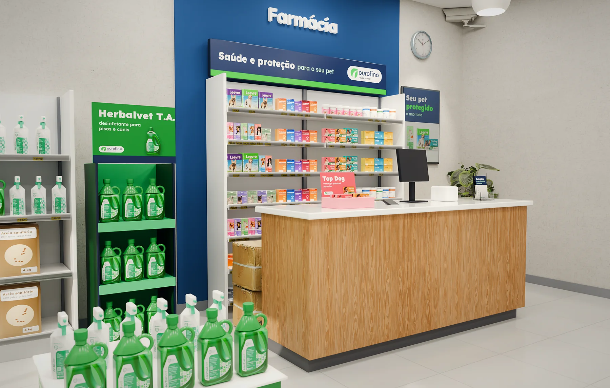
Guia de execução no ponto de venda
O que fazer antes, durante e depois da visita, da gôndola ao balcão. Para promotores, vendedores do distribuidor e equipes de loja.
Versão 2 · novembro de 2026 · em validação com a OurofinoO guia em seis partes
Leia em ordem na primeira vez. Depois, use como consulta: cada capítulo funciona sozinho.
Equipe Ourofino: toque em Revisão, no topo da página, para ver as 25 notas em amarelo com o que precisa da sua validação antes da versão final.
Abertura
4 · Materiais e cross
6 · Postura
Escolha pelo seu papel
Primeiro dia
Para quem está começando como promotor. Leia nesta ordem, do começo ao fim, antes da primeira visita.
Vendedor do distribuidor
Você já conhece o cliente. Aqui está o que o trade espera da loja e como falar de produto.
Dia de visita
Consulta rápida no celular, dentro da loja. Abra direto no que precisa.
Supervisor
Para acompanhar a equipe e conferir a execução nas fotos de antes e depois.
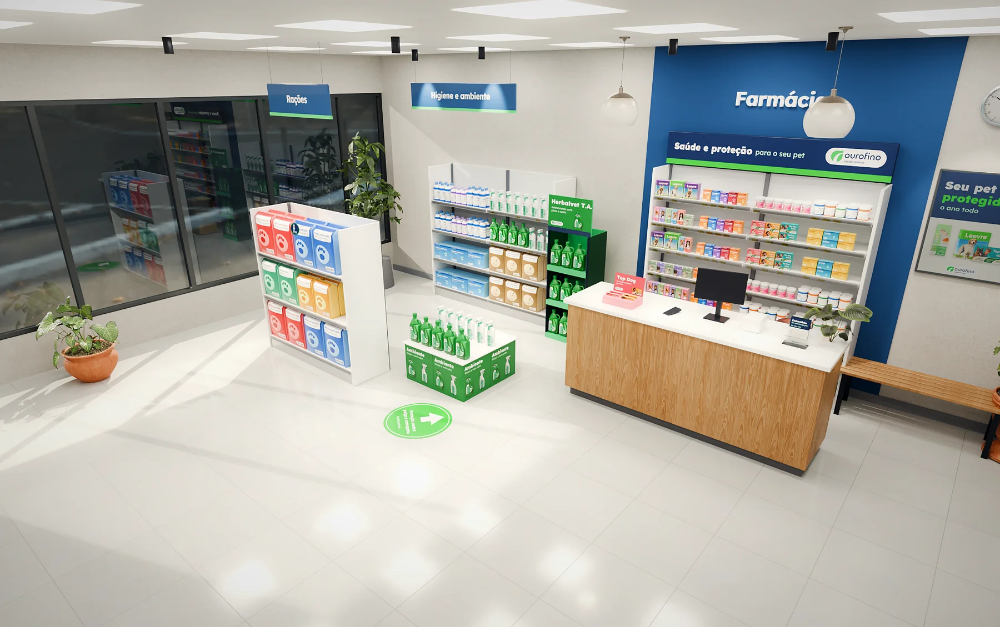
Para que serve este guia
Este guia mostra o que fazer dentro da loja para que o produto Ourofino Pet esteja disponível, com preço, bem exposto e lembrado na hora da compra. Você pode consultar no celular, no meio da visita.
- Entender por que o guia existe e quem deve usar
- Saber como consultar no celular, no treinamento e na versão impressa
- Reconhecer os blocos que aparecem em todos os capítulos
0.1O objetivo do guia
O mesmo produto vende muito em uma loja e quase nada na loja do lado. Na maior parte das vezes, a diferença está na prateleira: em uma, o produto está à vista, com preço e junto da sua categoria. Na outra, está escondido atrás de outra marca, sem preço, no fundo do estoque.
Este guia existe para que toda loja atendida pela Ourofino Pet receba o mesmo cuidado, seja qual for a cidade, o distribuidor ou a pessoa que faz a visita. Ele reúne o que você precisa saber e o que você precisa fazer, na ordem em que as coisas acontecem.
Algumas explicações vão parecer óbvias. Elas estão aqui porque cada pessoa chega com uma bagagem diferente. Tem gente com anos de merchandising e tem gente no primeiro emprego. Um vendedor pode bater a meta todo mês e nunca ter ouvido falar de FIFO. Ninguém precisa ter vergonha de consultar o básico.
0.2Quem deve usar
Para saber o que fazer em cada visita, do momento em que chega até o momento em que vai embora.
Para aproveitar a visita de pedido e deixar a prateleira da Ourofino Pet em ordem.
Para treinar a equipe com o mesmo método e conferir se a execução está no padrão.
Para aprender trade do zero, com cada termo explicado em linguagem simples.
Quando o assunto for dose, forma de uso ou indicação de tratamento, quem responde é o médico-veterinário ou o material oficial da Ourofino. O guia ensina a cuidar do produto na loja. A orientação técnica sobre o animal fica com quem tem formação para isso.
0.3Como usar
No celular, durante a visita
Abra o guia pelo link e vá direto ao capítulo da tarefa do momento. Vai organizar a prateleira? Abra “O básico da gôndola”. Vai instalar um material? Abra “Materiais de PDV”. O índice e os botões de atalho levam você direto ao ponto.
Cada capítulo começa com uma página de capa que resume o que você vai aprender. Se estiver com pressa, leia a capa, os passos e o “Certo e errado”. O resto fica para quando tiver mais tempo.
No treinamento
Leia os capítulos na ordem. Eles seguem a lógica do trabalho: primeiro entender o que é trade e como a loja funciona, depois a visita, depois a gôndola, os materiais, os produtos e a postura. Ao fim de cada capítulo, faça o teste rápido. No fim do guia, há um teste final com dez situações de loja.
Na versão impressa
A versão impressa traz o mesmo conteúdo, em páginas na horizontal. O checklist da visita e o glossário ficam no final, para você destacar e levar na pasta.
0.4Os seis blocos do guia
| Bloco | O que você aprende |
|---|---|
| 1 · Entender | O que é trade marketing e como a loja funciona |
| 2 · A visita | O que fazer antes, durante e depois, e como se relacionar com a equipe da loja |
| 3 · Na gôndola | O básico da prateleira, ponto natural e ponto extra, prateleira ideal |
| 4 · Materiais e cross | Cada material de PDV e onde ele vai, e como ligar produtos e categorias |
| 5 · Produtos | Como falar de produto e as fichas dos produtos heróis |
| 6 · Postura | Como se comportar na loja e quando avisar o supervisor |
0.5Como ler cada capítulo
Os capítulos usam sempre os mesmos blocos. Depois de ler dois ou três, você reconhece cada um de longe.
Um conselho curto de quem já está na rua há tempo.
Um erro que acontece de verdade nas lojas, com o jeito certo de fazer.
A tarefa na ordem em que você executa.
Duas colunas para conferir de olho rápido.
A definição de uma palavra técnica, com exemplo de loja.
Frases que você pode usar na conversa com a equipe da loja.
Um aprofundamento para quem quer entender o porquê. Toque para abrir.
Uma situação de loja para você conferir se entendeu.
Saiba maisPor que o guia é digital
A versão digital deixa você buscar um assunto em segundos, ampliar as figuras e marcar o checklist na hora. Quando um produto, uma campanha ou um material mudar, a Ourofino atualiza o guia e você recebe a versão nova pelo mesmo link. A versão impressa continua existindo para o treinamento e para quem prefere papel.
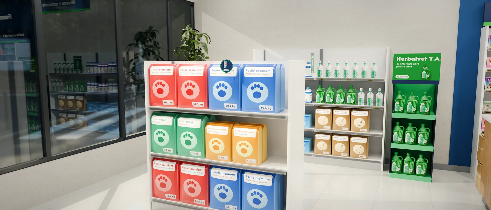
O que é trade marketing
Trade marketing é o trabalho que faz o produto ser encontrado e escolhido dentro da loja. Ele começa quando o produto chega na prateleira e só termina quando o tutor leva para casa.
- Explicar o que é trade marketing em uma frase
- Entender o caminho do produto da fábrica até o tutor
- Diferenciar sell-in de sell-out
- Saber o que você faz dentro da loja
1.1Trade marketing em uma frase
O conjunto de ações que faz o produto ser encontrado, entendido e escolhido dentro da loja. Exemplo: o WellPET está na prateleira dos antipulgas, de frente, com preço, e o balconista sabe para que ele serve.
Muita gente, dentro e fora da empresa, imagina que trade é colocar uma promotora para abordar o cliente na sexta e no sábado. A abordagem faz parte, mas é a menor parte do trabalho. O trade acontece todos os dias, com ou sem cliente na loja: produto na prateleira, preço à vista, validade em ordem, material no lugar certo e equipe da loja informada.
Quando a prateleira está arrumada de segunda a sexta, a abordagem do sábado rende muito mais. Com a prateleira bagunçada, o tutor ouve falar do produto, vai procurar e não encontra.
Ponto de venda. É o lugar onde o tutor compra o produto: o petshop, o petshop com clínica, a clínica veterinária que tem loja. Neste guia, PDV e loja querem dizer a mesma coisa.
Tutor é a pessoa responsável pelo animal. Shopper é quem está comprando na loja naquele momento. Quase sempre é a mesma pessoa, mas nem sempre: o filho pode comprar o vermífugo que a mãe pediu. Na loja, você fala com o shopper. O produto cuida do animal do tutor.
1.2O caminho do produto
Antes de chegar na mão do tutor, o produto passa por várias mãos. Entender esse caminho ajuda você a saber em que ponto está o seu trabalho.
- IndústriaA Ourofino desenvolve e fabrica o produto, cria a embalagem e os materiais de PDV.
- DistribuidorCompra os produtos da Ourofino e revende para as lojas da sua região. Os vendedores do distribuidor visitam as lojas e tiram os pedidos.
- LojaCompra do distribuidor, guarda no estoque, coloca na prateleira e vende para o tutor.
- TutorEntra na loja, encontra o produto, escolhe e leva para cuidar do seu animal.
O trabalho de trade acontece no passo 3, dentro da loja. Ele existe para que o passo 4 aconteça.
1.3Sell-in e sell-out
Esses dois nomes aparecem em toda conversa de trade. Vale gastar dois minutos para entender cada um.
A venda para dentro da loja. Acontece quando a loja compra o produto do distribuidor. O produto entrou no estoque, mas nenhum tutor levou para casa ainda.
A venda para fora da loja. Acontece quando o tutor paga o produto no caixa. É a venda que faz a loja comprar de novo.
| Sell-in | Sell-out | |
|---|---|---|
| Quem compra | A loja | O tutor |
| De quem compra | Do distribuidor | Da loja |
| Onde aparece | No pedido do distribuidor | No caixa da loja |
| O que você faz | Confere se o produto chegou na prateleira | Garante que o tutor encontre e escolha |
Imagine uma loja que comprou 12 caixas de Top Dog em janeiro. Esse foi o sell-in. As caixas foram para a prateleira de baixo, atrás de outra marca, sem preço. Em março, a loja ainda tem 10 caixas e não faz pedido novo. O distribuidor vendeu, mas o tutor não comprou.
Agora imagine a mesma loja com o Top Dog na altura dos olhos, ao lado dos outros vermífugos, com preço e com um wobbler chamando atenção. As caixas giram, a loja pede de novo e o ciclo continua. A distância entre os dois cenários depende do que você faz na loja.
Saiba maisPor que o sell-out puxa o sell-in
A loja só compra de novo o que vende. Quando o produto fica parado, ele ocupa dinheiro da loja e espaço no estoque, e o dono passa a pedir menos ou deixa de pedir. Quando o produto gira, isto é, sai da prateleira com frequência, o dono confia nele, pede mais e às vezes libera mais espaço.
Por isso o distribuidor e a Ourofino acompanham o sell-out com atenção. Um pedido grande que encalha na loja vira um problema no mês seguinte. Um produto bem exposto, que o tutor encontra e leva, gera pedidos constantes.
Giro é a palavra usada para falar dessa velocidade. Produto de giro alto sai rápido. Produto de giro baixo fica parado na prateleira.
1.4Os canais
Canal é o tipo de loja por onde o produto chega ao tutor. Neste guia, você vai trabalhar com três canais:
A venda de produtos é o centro do negócio. O tutor circula e escolhe.
A loja continua sendo o centro, mas tem consultório veterinário.
O atendimento veterinário é o centro. A loja complementa a consulta.
Cada canal pede um cuidado diferente. O capítulo 2 mostra como reconhecer cada um e o que muda no seu trabalho.
1.5O que você faz dentro da loja
Seu trabalho cabe em cinco tarefas. Todas as outras páginas deste guia ensinam a fazer cada uma delas bem feita.
Conferir se tem produto na prateleira e avisar quando faltar.
Na altura certa, de frente para o tutor, junto da sua categoria.
Produto sem preço vende menos, mesmo no melhor lugar.
Cada material tem um objetivo e um lugar.
Explicar o produto para o balconista, sem atrapalhar o atendimento.
Nenhuma dessas tarefas inclui tratar de preço, espaço ou condição comercial com a loja. Esse assunto é do time comercial. Se a loja puxar essa conversa, anote o pedido e avise o seu supervisor.
Uma loja comprou 20 unidades de WellPET do distribuidor há dois meses e ainda tem 18 no estoque. O que aconteceu?
Qual destas ações faz parte do trabalho de trade?
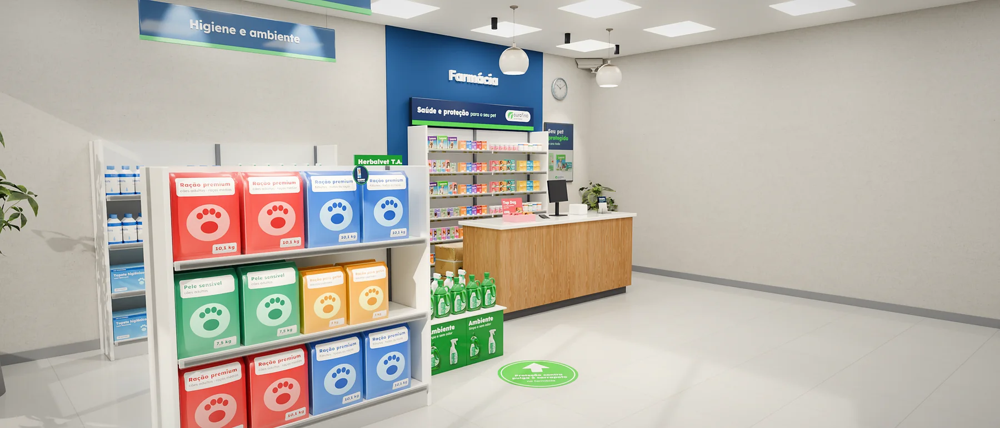
Conhecendo a loja
Cada loja funciona de um jeito. Antes de mexer em qualquer produto, você precisa saber em que tipo de loja está, como ela se organiza e quem decide cada coisa.
- Reconhecer os três tipos de loja do guia
- Ler o mapa da loja e a área de cada categoria
- Saber quem é quem e quem decide em cada tipo de loja
- Falar com o balconista e com o gerente do jeito certo
2.1Os três tipos de loja
A mesma ação funciona em uma loja e atrapalha em outra. Um display de chão cabe bem na entrada de um petshop grande. Na recepção de uma clínica pequena, ele fecha a passagem. Por isso, a primeira coisa que você identifica ao chegar é o tipo de loja.
| Petshop | Petshop com clínica | Clínica com petshop | |
|---|---|---|---|
| Centro do negócio | A venda de produtos | A loja, com consultório ao lado | O atendimento veterinário |
| Como o tutor compra | Circula, compara e escolhe sozinho | Escolhe na loja e às vezes chega com indicação do veterinário | Compra o que foi orientado na consulta |
| Sua prioridade | Exposição, preço, material e cross | Farmácia organizada e balconista preparado | Produto disponível e farmácia em ordem |
| Cuidado | Não poluir a loja com material | Não interferir no consultório | Material discreto, longe do atendimento |
Petshop
É a loja de bairro ou o autosserviço maior. O tutor entra, anda pelos corredores e pega o que precisa. Aqui a exposição pesa muito: o que está à vista e com preço vende. É onde você tem mais espaço para materiais de PDV e para cross.
Petshop com clínica
A loja continua sendo o centro, mas existe um consultório. Parte dos tutores sai da consulta e passa na loja para comprar o que o veterinário orientou. Por isso, a farmácia precisa estar organizada e com o produto disponível. O balconista recebe muitas dúvidas e precisa conhecer o produto.
Clínica veterinária com petshop
O atendimento é o centro. A loja é menor e serve para complementar a consulta. Aqui você trabalha com mais discrição: produto disponível, farmácia organizada e preço à vista valem mais do que muito material.
2.2O mapa da loja
Toda loja pet tem as mesmas áreas, ainda que em tamanhos e posições diferentes. Conhecer essas áreas ajuda você a saber onde cada produto e cada material deve ficar.
Arraste para o lado para ver a planta inteira.
Primeira impressão. O tutor ainda está decidindo para onde ir.
Alimentos de cão e de gato, em corredores ou lados separados. Área de muito movimento.
Coleiras, guias, camas, comedouros e brinquedos.
Shampoo, condicionador e colônia. São os produtos de beleza do pet e ficam fora da farmácia.
Desinfetantes, eliminadores de odor, tapetes higiênicos e areia para gato.
Antiparasitários, vermífugos, medicamentos e suplementos.
Serviço com hora marcada. O tutor deixa o pet e muitas vezes espera na loja.
Atendimento veterinário, em lojas que têm clínica.
Onde o tutor paga. Última chance de lembrar de um produto.
A área onde ficam os produtos de saúde animal: antiparasitários de pulga e carrapato, vermífugos, medicamentos e suplementos. Em geral fica atrás do balcão ou em uma área controlada, porque são produtos de maior valor e que pedem orientação. O WellPET, por exemplo, costuma ficar atrás do balcão.
Repare também no caminho que o tutor faz. Ele entra, vai até a ração, passa pelos acessórios, pede alguma coisa no balcão e termina no caixa. Cada ponto desse caminho é uma chance de ele lembrar de um produto. O capítulo de cross mostra como aproveitar isso.
2.3Quem é quem na loja
Decide o que a loja compra, quanto espaço cada categoria ganha e quais são as regras da casa. Nem sempre está na loja.
Cuida do dia a dia: equipe, organização, estoque e reposição. Em muitas lojas é quem autoriza mexer na prateleira e instalar material.
Atende o tutor, tira dúvidas e indica produtos. É quem mais influencia a escolha na hora da compra.
Responsável pelo animal. Quer resolver um problema do pet com segurança e sem perder tempo.
Atende na clínica e orienta o tratamento. A relação técnica com ele fica com o time de Demanda da Ourofino.
O veterinário tem muita influência sobre o que o tutor compra, mas ele não é o seu público. Se ele fizer uma pergunta técnica, agradeça, anote e avise o seu supervisor para que o time de Demanda dê o retorno.
2.4Quem decide em cada tipo de loja
Antes de mexer na prateleira ou instalar um material, você precisa da autorização de quem decide. Em cada tipo de loja, essa pessoa muda.
| Decisão | Petshop | Petshop com clínica | Clínica com petshop |
|---|---|---|---|
| Comprar o produto | Dono ou comprador | Dono | Veterinário responsável ou administrador |
| Mexer na prateleira | Gerente | Gerente | Recepção ou administrador |
| Instalar material | Gerente ou dono | Gerente | Veterinário responsável |
| Indicar o produto ao tutor | Balconista | Balconista e veterinário | Veterinário |
Na primeira visita, pergunte sem rodeio:
“Para organizar a prateleira da Ourofino e instalar material, com quem eu devo falar?”
Anote o nome e o cargo. Na próxima visita, você já chega procurando a pessoa certa.
2.5Como falar com o balconista e com o gerente
O balconista e o gerente olham para o mesmo produto com preocupações diferentes. O balconista pensa no tutor que está na frente dele: quer resolver o problema do animal e atender bem. O gerente pensa na loja: quer vender, evitar falta de produto e usar bem o espaço.
Com o mesmo produto, você usa um argumento para cada um. Veja o Top Dog como exemplo.
Com o balconista, fale do que ajuda no atendimento ao tutor:
“Quando chegar tutor com filhote para vermifugar, lembra do Top Dog. É um comprimido com sabor que os cães gostam, o que facilita na hora de dar.”
Com o gerente, fale do que ajuda a loja:
“Deixei o Top Dog na altura dos olhos, junto dos outros vermífugos e com preço. Assim o tutor encontra sozinho e o balconista não precisa ir buscar no estoque.”
Saiba maisUma sementinha de gerenciamento de categoria
Categoria é o conjunto de produtos que resolvem a mesma necessidade do tutor. Antipulgas e carrapaticidas formam uma categoria. Vermífugos formam outra. Desinfetantes de ambiente, outra.
O tutor procura por categoria. Ele chega pensando “preciso de alguma coisa para pulga” e não “preciso da marca X”. Quando a loja organiza a prateleira por categoria, com as marcas lado a lado e preço à vista, o tutor compara, escolhe e compra mais rápido. A loja vende a categoria inteira melhor, e a marca bem posicionada dentro dela ganha.
Por isso, quando você conversa com o gerente, fale da categoria inteira, com o produto Ourofino dentro dela. Esse assunto vai crescer em próximas versões do guia.
Você está em uma clínica veterinária com petshop e quer instalar um wobbler. Onde ele pode ficar?
O gerente quer saber por que vale organizar a prateleira de antipulgas. Qual argumento conversa com ele?
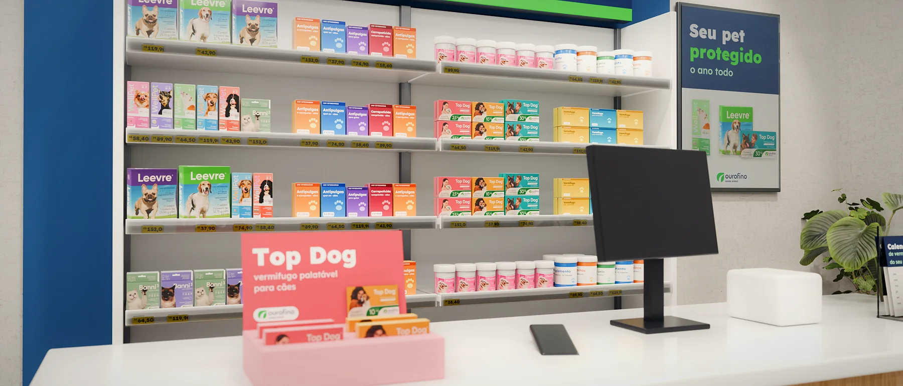
Antes, durante e depois da visita
A visita começa antes de você entrar na loja e termina depois que você sai. Seguir a mesma ordem em todas as lojas evita esquecimento e deixa claro, para você e para a equipe da loja, o que você veio fazer.
- Preparar a visita antes de sair
- Seguir a ordem certa dentro da loja
- Fotografar antes e depois do jeito certo
- Registrar a visita e avisar o que ficou pendente
3.1A visita em três momentos
- 01Defina o objetivo da visita
- 02Separe material e kit
- 03Revise as pendências da última visita
- 04Confira a rota e os horários
- 01Chegue e se apresente
- 02Leia a loja
- 03Fotografe antes
- 04Corrija o básico
- 05Execute a prioridade do dia
- 06Converse com a equipe
- 07Fotografe depois
- 08Encerre com o responsável
- 01Registre a visita com as fotos
- 02Avise o supervisor sobre pendências
- 03Anote o que levar na próxima vez
Este capítulo trata da execução: o que você faz na rua, na ordem em que faz. O estudo vem antes. Conhecer os produtos, os materiais e os conceitos de gôndola é assunto dos outros capítulos e do treinamento. Na loja, você não tem tempo de estudar. Você consulta e executa.
3.2Antes da visita
O dono da loja enxerga o total que vendeu no mês. Ele não sabe que a prateleira de antipulgas ficou vazia dois dias na semana passada, nem que o Banni 3 está escondido atrás de outra marca. A loja não tem esse nível de detalhe. Só você consegue mostrar o tamanho da oportunidade, e para isso precisa chegar preparado.
- Revise a lojaAbra as anotações e as fotos da última visita. Veja o que ficou pendente e o que você combinou com o gerente.
- Defina um objetivoEscolha uma prioridade para esta visita. Exemplo: “corrigir a prateleira de antipulgas” ou “instalar o display de balcão do Top Dog”.
- Confira se há campanhaVeja se existe alguma ação da Ourofino em andamento e qual material faz parte dela.
- Separe o materialLeve os materiais de PDV certos para aquela loja e o seu kit de trabalho.
- Planeje o tempoSaiba quanto tempo vai ficar. Algumas lojas pedem horário combinado.
O kit da visita
Para fotos, consulta ao guia e registro da visita.
A equipe da loja precisa saber quem você é logo de cara.
Só os que você vai usar naquela loja, em bom estado.
Para fixar material sem danificar a prateleira.
Para limpar embalagem e prateleira.
Para anotar nomes, pedidos e pendências quando o celular não ajudar.
3.3Durante a visita
Siga a ordem abaixo em toda loja. Ela foi pensada para resolver primeiro o que faz o tutor deixar de comprar.
1. Chegue e se apresente
Espere o atendimento terminar, cumprimente, diga seu nome, sua empresa, o que veio fazer e quanto tempo vai levar. O capítulo 4 traz a fala completa, palavra por palavra.
2. Leia a loja
Antes de tocar em qualquer produto, faça uma volta de cinco minutos. Passe pela entrada, pela ração, pelos acessórios, pela farmácia, pela higiene e pelo caixa. Observe:
- O produto Ourofino está na loja? Em que lugar?
- Tem preço?
- Tem buraco na prateleira onde deveria ter produto?
- Algum material está instalado? Está em bom estado e dentro da campanha?
- Onde está a marca concorrente?
Quando o produto falta na prateleira. Exemplo: o espaço do Banni 3 está vazio, mas tem caixa no estoque. Para o tutor, o produto não existe naquela loja.
3. Fotografe antes
A foto de antes mostra o ponto de partida. Sem ela, você não consegue mostrar o que mudou com o seu trabalho, nem para a loja nem para o seu supervisor.
4. Corrija o básico
Resolva nesta ordem: produto em falta, limpeza, preço, validade e frente. O capítulo 5 explica cada item.
5. Execute a prioridade do dia
Material novo, ponto extra e cross entram só depois que o básico está em ordem.
6. Converse com a equipe
Aproveite um momento sem cliente para passar uma informação útil ao balconista. Uma informação por visita é suficiente.
7. Fotografe depois
Tire a foto do mesmo lugar e do mesmo ângulo da foto de antes. Assim, quem olhar as duas vê a diferença na hora.
- Fotografe a prateleira inteira, de frente, a uns dois passos de distância
- Tire a foto de depois do mesmo lugar da foto de antes
- Mostre o preço e o material na mesma foto
- Foto de perto que mostra uma caixa só
- Foto com rosto de cliente ou de funcionário
- Foto de lado, em que não dá para ver a prateleira
8. Encerre com o responsável
Conte o que você fez, o que ficou pendente e quando volta. O capítulo 4 mostra como fazer esse encerramento.
3.4Depois da visita
- Registre a visitaAnote o que você encontrou e o que fez, com as fotos de antes e depois.
- Liste as pendênciasRuptura, falta de preço, pedido de material, pergunta técnica que você não respondeu.
- Avise o seu supervisorInforme o que não depende de você: produto em falta por mais de uma visita, loja que não permite o trabalho, dúvida técnica, ação diferente da concorrente.
- Prepare a próxima visitaDeixe anotado o objetivo da próxima vez.
Saiba maisTreinamento e execução não se misturam
Treinamento é o que você aprende antes de ir para a rua: conhecer os produtos, entender o que é ponto natural, saber para que serve cada material, praticar a fala de apresentação. Execução é o que você faz na loja, na frente da prateleira.
Quando os dois se misturam, a visita fica longa e confusa. A pessoa tenta lembrar um conceito no meio do corredor e esquece de fotografar. Por isso este capítulo traz só a ordem da visita. Os conceitos ficam nos capítulos de cada assunto, para você estudar com calma e consultar rápido quando precisar.
Na prática: estude em casa ou no treinamento. Na loja, siga a ordem e use o guia como consulta.
Você chegou com um display novo para instalar. A prateleira de vermífugos está com dois buracos e sem preço. O que você faz primeiro?
Um produto Ourofino está em falta na prateleira pela terceira visita seguida. O que fazer?
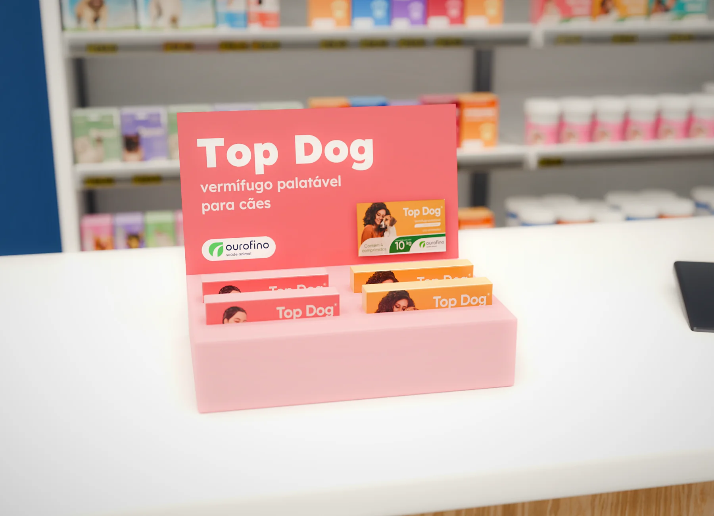
Relacionamento em loja
A loja recebe você como convidado. Chegar, se apresentar e sair do jeito certo faz a equipe confiar no seu trabalho e abrir a porta na próxima visita.
- Se apresentar na chegada com a fala certa
- Combinar onde ficar e trabalhar sem atrapalhar
- Construir confiança com a equipe da loja
- Encerrar a visita deixando tudo claro
4.1Você é convidado
A loja tem dono, equipe, clientes e regras próprias. O espaço pertence a ela. Você entra porque a loja permite, e o seu trabalho depende dessa permissão.
Já aconteceu de um lojista ligar para a Ourofino dizendo: “tem uma menina aqui que não sabe o que veio fazer”. A promotora sabia o que fazer. Ela chegou sem se apresentar, começou a mexer na prateleira e ninguém da loja entendeu quem ela era. Uma apresentação de 30 segundos teria evitado a ligação.
Trate a loja como você trataria a casa de alguém que convidou você para almoçar: cumprimente, peça licença, pergunte antes de mexer, deixe tudo arrumado ao sair.
4.2A chegada, passo a passo
- Espere o momento certoSe o balconista estiver atendendo, aguarde. Atendimento de cliente vem antes de você.
- Cumprimente e diga quem você éSeu nome e a empresa que você representa.
- Diga o que veio fazerUma tarefa concreta, que a pessoa entenda na hora.
- Diga quanto tempo vai levarA equipe se organiza melhor quando sabe.
- Peça licençaPergunte com quem deve falar e se pode começar agora.
- Combine o básicoOnde deixar suas coisas, se pode usar o banheiro e pegar água, onde pode ficar sem atrapalhar.
4.3A fala de chegada
Use a fala abaixo como modelo. Troque o nome, a tarefa e o tempo de acordo com a sua visita.
“Bom dia! Meu nome é [seu nome], sou promotora da Ourofino Pet.”
“Hoje vim organizar a prateleira de antipulgas e vermífugos da Ourofino e conferir os preços. Devo levar uns 40 minutos.”
“Com quem eu falo para começar? Posso trabalhar agora ou é melhor esperar algum horário?”
“Pode começar, o gerente está lá nos fundos.”
“Obrigada. Onde eu posso deixar a minha bolsa e o material?”
“Se eu precisar, posso usar o banheiro e pegar um copo de água?”
“Tem algum lugar em que eu não devo ficar, para não atrapalhar o atendimento?”
Se você for vendedor do distribuidor, a lógica é a mesma:
“Boa tarde! Sou o [seu nome], vendedor da [nome do distribuidor]. Trabalho com os produtos da Ourofino Pet.”
“Hoje, além do pedido, quero conferir a prateleira de antipulgas: se tem produto, se está com preço e no lugar certo. Levo uns 15 minutos.”
Por que a fala precisa ser clara
Frase vaga deixa a pessoa sem saber o que vai acontecer na loja dela. Ela fica desconfiada, e com razão. Quando você diz a tarefa e o tempo, a equipe relaxa e ajuda.
- “Vim organizar a prateleira de vermífugos e conferir os preços. Levo 30 minutos.”
- “Vou instalar este display de balcão do Top Dog. Fica melhor ao lado do caixa ou perto da farmácia?”
- “Antes de começar, com quem eu confirmo se posso mexer na prateleira?”
- “Oi, sou da Ourofino, posso dar uma olhada aqui?”
- Começar a mexer na prateleira sem falar com ninguém
- “Vou mudar tudo aqui, deixa comigo.”
4.4Onde ficar e como trabalhar
Trabalhe de lado, sem bloquear a passagem. Se um cliente chegar perto, abra espaço.
Caixas e sacolas ficam onde a loja indicou, nunca no chão do corredor.
Não use o balcão de atendimento como mesa de trabalho.
Recolha embalagens, plásticos e fitas. A loja precisa ficar mais arrumada do que você encontrou.
Não tire nem esconda produto da marca concorrente.
4.5Os três pilares do relacionamento
A loja deixa você trabalhar quando confia em você. Essa confiança se constrói em três frentes.
Confiança
Faça o que você disse que ia fazer. Quando não puder, avise antes. Não prometa o que não depende de você.
“Hoje não trouxe o display que vocês pediram. Já avisei o meu supervisor e trago na próxima visita, dia 12.”
Rapidez de resposta
Responda as dúvidas e os pedidos da loja no prazo combinado. Quando não souber a resposta, diga quando volta com ela.
“Esse Banni 3 pode usar em filhote de gato?”
“Para uso e idade, quem orienta é o veterinário ou a bula. Eu levo a sua pergunta e trago o material oficial na próxima visita.”
Reconhecimento
Agradeça a ajuda, elogie o que a loja fez bem e lembre do nome das pessoas.
“A área de higiene ficou muito bem organizada. Dá para achar tudo rapidinho.”
“Obrigada por liberar o espaço no balcão. Semana que vem eu volto para trocar o material da campanha.”
4.6O que você nunca faz na loja
O seu trabalho é de execução. Preço, espaço e condição comercial são assuntos do time comercial. Se a loja trouxer um desses temas, diga que vai passar o pedido para o responsável e avise o seu supervisor.
- Pedir espaço extra, ponta de gôndola ou desconto em troca de qualquer coisa
- Prometer brinde, bonificação ou condição comercial
- Falar mal da marca concorrente
- Discutir com alguém da equipe da loja
- Indicar dose ou tratamento para o tutor
- Usar o celular para assuntos pessoais durante a visita
4.7Como encerrar a visita
- Procure o responsávelNão saia sem falar com quem autorizou o seu trabalho.
- Conte o que você fezMostre as fotos de antes e depois se ajudar.
- Diga o que ficou pendenteProduto em falta, material que vai trazer, pergunta que vai responder.
- Combine a próxima visitaData e o que você vai fazer.
- AgradeçaPelo espaço e pela ajuda.
“Terminei. Organizei a prateleira de antipulgas, coloquei preço no WellPET e no Leevre e instalei o wobbler do Top Dog na farmácia.”
“Ficou faltando Banni 3 na prateleira. Vou avisar o meu supervisor para ver a reposição.”
“Volto no dia 20. Obrigada pelo espaço e pela ajuda de vocês.”
Saiba maisQuando a loja não deixa você trabalhar
Às vezes a loja pede para você voltar outro dia ou não libera o trabalho. Os motivos variam: loja cheia, responsável ausente, inventário, um problema em uma visita anterior.
Nesses casos:
- Não insista e não discuta.
- Pergunte qual é o melhor dia e horário para voltar.
- Registre o que aconteceu, com o nome de quem atendeu você.
- Avise o seu supervisor no mesmo dia.
Quando você recebe a recusa com educação, a loja costuma liberar o trabalho na visita seguinte. Se você discute, a loja fecha a porta para você e para quem vier depois.
Você chega na loja e o balconista está atendendo um tutor. O que você faz?
O gerente pergunta se a Ourofino “dá alguma coisa” para a loja deixar o display na entrada. O que você responde?
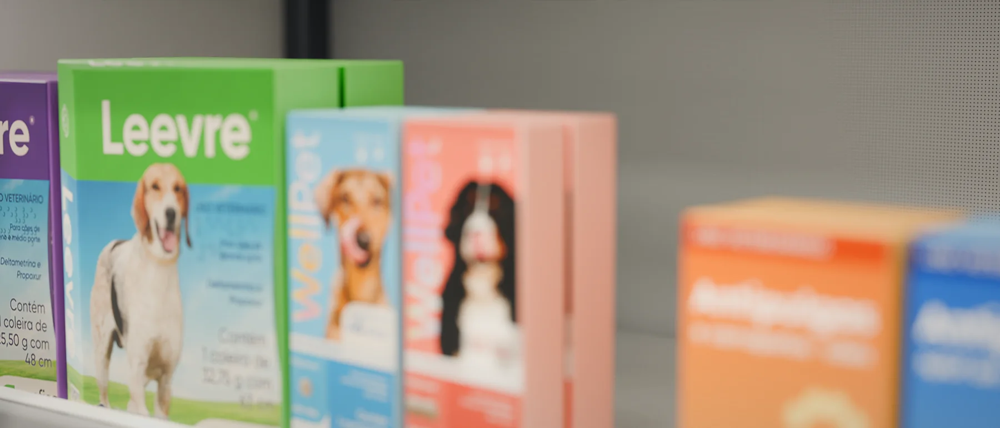
O básico da gôndola
A gôndola é onde o tutor decide a compra. Antes de pensar em material ou ação especial, ela precisa estar com o produto certo, no lugar certo, limpo e com preço.
- Reconhecer o ponto natural de cada produto
- Conferir a validade e aplicar o FIFO
- Montar uma frente bem feita e blocar a linha
- Usar as alturas da gôndola a favor da marca
5.1As palavras da loja
Ponto de venda. É a loja onde o tutor compra: petshop, petshop com clínica ou clínica com petshop. Quando alguém diz “vou ao PDV”, quer dizer “vou à loja”.
O móvel de prateleiras onde os produtos ficam expostos. Numa loja pet você encontra gôndola de ração, de acessórios, de higiene e, atrás do balcão, a prateleira da farmácia.
A pessoa responsável pelo animal. É quem entra na loja e faz a compra.
Tudo o que vem nos próximos capítulos, como material, cross e ponto extra, depende desta base. Um display bonito ao lado de uma prateleira vazia não vende o produto que falta.
5.2Ponto natural: o endereço do produto
O lugar fixo onde o produto fica dentro da loja, junto da categoria dele. É ali que o tutor procura sem precisar perguntar. O WellPET, por exemplo, fica na farmácia, ao lado dos outros antipulgas para cão.
Pense no ponto natural como o endereço do produto. O tutor volta sempre ao mesmo endereço. Se um dia ele chega e o produto não está lá, leva a marca que estiver no lugar.
Numa loja que você ainda não conhece, descubra o ponto natural assim:
- Identifique a categoriaantipulga e vermífugo ficam com os medicamentos, na farmácia. Desinfetante fica com a higiene do ambiente.
- Procure os vizinhoso produto fica junto dos concorrentes que fazem a mesma coisa.
- Confirme com o balconistacada loja tem o seu jeito. Pergunte onde a equipe guarda o produto e onde o tutor costuma pedir.
5.3Os quatro básicos
Toda vez que você chega numa gôndola, confira estes quatro pontos, nesta ordem:
o produto está na prateleira, na quantidade certa. Quando falta, o nome disso é ruptura.
embalagem sem poeira, sem amassado e sem etiqueta velha colada por cima.
a etiqueta está na prateleira, embaixo do produto certo, e dá para ler de longe.
nenhum produto vencido, e os que vencem antes ficam na frente.
Quando o produto acaba na prateleira. O tutor chega, não encontra e leva outra marca. Aquela venda não volta.
Se o produto falta, deixar a prateleira bonita não resolve. Anote a ruptura, avise o balconista e, se a loja tiver estoque no depósito, peça para repor antes de arrumar o resto.
5.4Validade e FIFO
Sigla em inglês para “first in, first out”, que quer dizer “o primeiro que entra é o primeiro que sai”. Na prateleira, o produto que vence antes fica na frente, para ser vendido primeiro.
Produto vencido na prateleira coloca o animal em risco e faz o tutor perder a confiança na marca. O erro costuma acontecer na reposição com pressa: a caixa nova, que acabou de chegar, entra na frente das antigas.
- Tire os produtos da prateleiraapoie no balcão ou num cesto. Nunca no chão.
- Leia a validadeela fica impressa na caixa, no rótulo ou no fundo do frasco.
- Separe os vencidosentregue ao balconista. Você não descarta nada por conta própria.
- Monte de novovencimento mais próximo na frente, mais distante atrás.
5.5Frente (facing)
Cada unidade do produto que aparece virada para o corredor. Três caixas de WellPET lado a lado são três frentes. Quanto mais frentes, mais o tutor vê a marca.
- Puxe para a bordatraga o produto até a beirada da prateleira. Produto empurrado para o fundo dá a impressão de prateleira vazia.
- Vire o rótulonome e marca retos, de frente para quem passa.
- Alinhe a filauma caixa atrás da outra, sem caixa torta e sem buraco.
- Confira o preçocada produto em cima da etiqueta dele.
5.6Blocagem
Agrupar os produtos de uma mesma linha num bloco só, em vez de espalhar unidades pela gôndola. O bloco forma uma mancha de cor que o tutor enxerga do começo do corredor.
- Vertical: use quando a linha tem versões para cada tamanho de animal. O Top Dog, por exemplo, tem versões para cães de 2,5 kg, 10 kg e 30 kg. Em coluna, o tutor desce o olhar e acha o peso do cão dele.
- Horizontal: use quando a loja reserva uma prateleira inteira para a Ourofino, de preferência na altura dos olhos.
Dentro do bloco, organize do menor para o maior: do cão pequeno para o cão grande, da embalagem menor para a maior.
5.7As alturas da gôndola
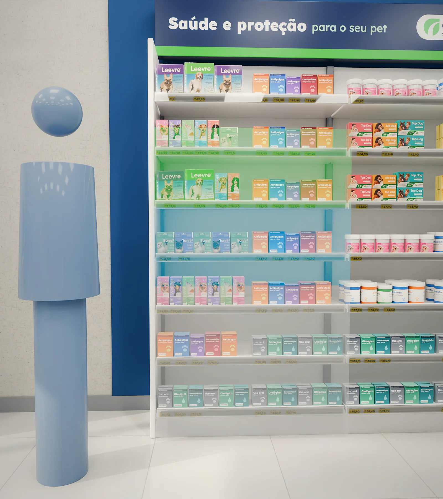
A faixa da prateleira entre a altura do peito e a dos olhos de um adulto. É a primeira coisa que o tutor vê quando para na frente da gôndola.
| Faixa | Altura aproximada | O que colocar ali |
|---|---|---|
| Olhos (zona quente) | de 1,20 m a 1,60 m | produtos prioritários da Ourofino e produtos de campanha |
| Mãos | de 0,80 m a 1,20 m | a linha completa, fácil de pegar |
| Pés | abaixo de 0,80 m | embalagens grandes, pesadas e estoque de apoio |
Na farmácia atrás do balcão vale a mesma lógica. O tutor vê a prateleira por cima do ombro do balconista, então a zona quente é a prateleira na altura do rosto de quem atende.
5.8Ao lado da concorrente
O tutor costuma ir até a gôndola procurando a marca que já conhece. Com a Ourofino ao lado da marca concorrente, ele compara na hora: embalagem, tamanho, preço. Se a nossa marca estiver em outro canto, ela nem entra na comparação.
- Coloque a Ourofino ao lado da concorrente que tem a mesma função
- Trabalhe dentro do espaço que a loja já destina à Ourofino
- Mexer, esconder ou tirar produto da concorrente
- Levar a Ourofino para longe da categoria só para ela aparecer sozinha
5.9Antes e depois
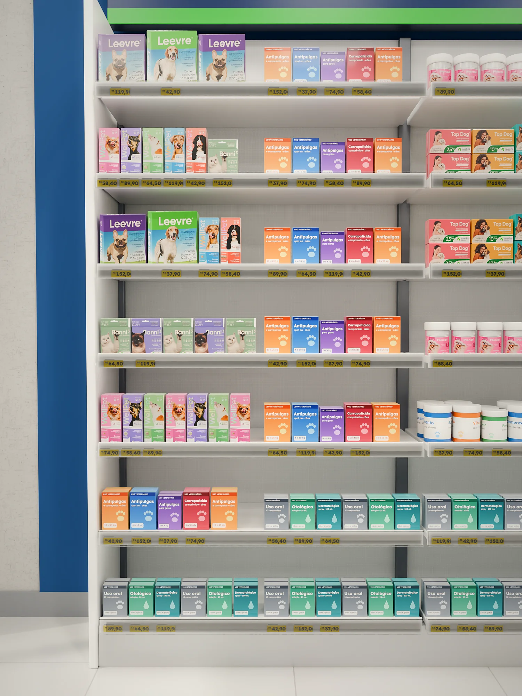
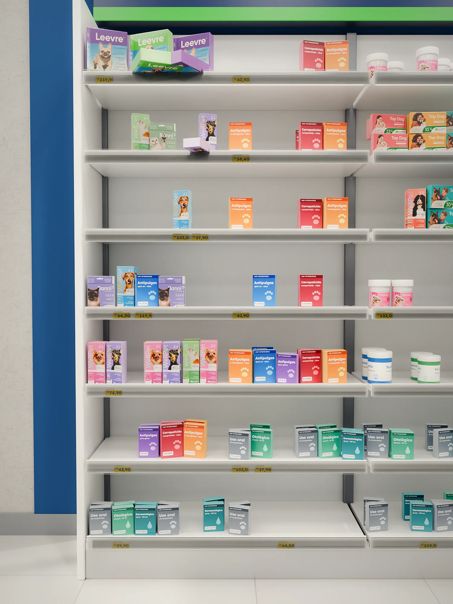
Tire as duas fotos do mesmo ponto e com o mesmo enquadramento. Assim o seu supervisor compara o resultado sem precisar ir até a loja.
Saiba maisPor que a ordem importa
A sequência deste capítulo segue a lógica da venda. O tutor só compra o que encontra, então a primeira coisa é ter o produto na prateleira. Depois vem o que faz ele confiar: embalagem limpa, preço visível e validade em dia.
Com a base em ordem, entram os detalhes que fazem a marca aparecer: frente bem feita, blocagem e zona quente. Se você inverter a ordem e gastar a visita deixando o bloco perfeito, pode sair da loja com um produto vencido na frente ou com uma ruptura que ninguém avisou.
Quando o tempo da visita for curto, faça na ordem e pare onde der: disponível, limpo, com preço, na validade, frente, blocagem e zona quente.
Você chega na farmácia e vê que as caixas novas de Top Dog foram colocadas na frente das que vencem no mês que vem. O que você faz?
Num petshop, onde fica o ponto natural do WellPET?
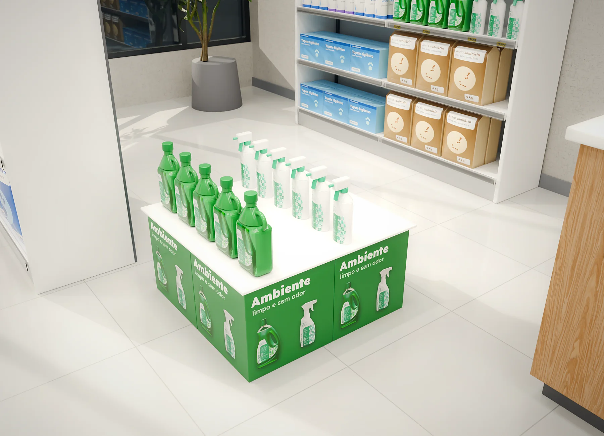
Ponto natural e ponto extra
O ponto extra ajuda a vender mais quando o ponto natural continua cheio. Tirar o produto da gôndola para encher uma ilha ou um display é um dos erros que mais acontecem na loja.
- Diferenciar ponto natural de ponto extra
- Saber quando vale montar um ponto extra
- Abastecer o ponto extra sem esvaziar a gôndola
- Lidar com produtos que ficam atrás do balcão
6.1Os dois pontos
O lugar fixo do produto, junto da categoria dele. É onde o tutor procura primeiro. Antipulga fica na farmácia, desinfetante fica na higiene do ambiente.
Um segundo lugar onde o mesmo produto aparece, fora da gôndola de sempre: um display de chão, uma ilha ou um display no balcão. Ele serve para o tutor encontrar o produto num caminho onde ele não estava procurando.
O ponto natural atende quem entrou na loja já sabendo o que quer comprar. O ponto extra conversa com quem passou por ali e lembrou que precisava do produto.
fixo, dentro da categoria, sempre abastecido. Atende o tutor que vem buscar o produto.
fora da categoria, ligado a uma campanha ou época do ano. Lembra o tutor que estava passando.
6.2A regra de ouro
O ponto natural fica cheio, sempre. O ponto extra recebe o que sobrar.
O erro acontece assim: a loja recebe um display de chão novo, o promotor quer deixar o display cheio e pega as caixas da gôndola para abastecer. O display fica bonito e a gôndola fica com um buraco. O tutor que vai direto à categoria procurar o produto não encontra e leva o concorrente.
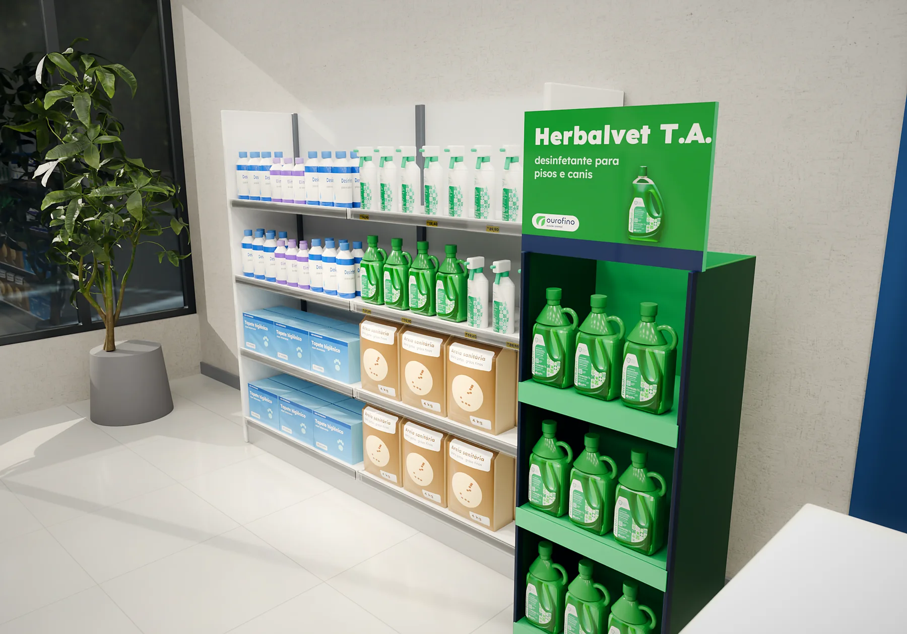
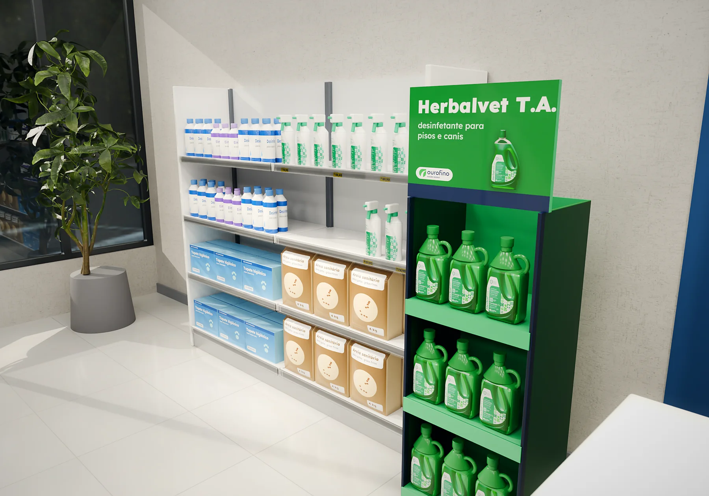
6.3Quando vale montar um ponto extra
- A loja autorizou e mostrou o lugar
- Tem estoque para encher a gôndola e o ponto extra
- Existe um motivo, como uma campanha ou uma época de mais pulga e carrapato
- O lugar tem passagem de tutor e combina com o produto
- Faltar produto na gôndola para encher o ponto extra
- Montar sem pedir para a loja
- Colocar num canto onde ninguém passa
- Usar material de uma campanha que já acabou
6.4Como abastecer sem errar
- Complete a gôndola primeirotodas as frentes cheias, com preço e com FIFO.
- Confira o que sobrouveja no depósito ou pergunte ao balconista quanto estoque extra a loja tem.
- Monte o ponto extra com essa sobrao mesmo produto, com preço visível.
- Fotografe os doisa gôndola cheia e o ponto extra, na mesma visita.
- Combine a reposiçãoavise o balconista que o ponto extra também precisa ser reposto.
6.5Produtos que ficam atrás do balcão
Alguns produtos ficam fora do alcance do tutor. Medicamentos e antiparasitários de maior valor ficam atrás do balcão ou numa área controlada, onde o balconista orienta quem compra. O WellPET é um desses produtos.
Para eles, o ponto extra usa só material: um wobbler, um cartaz ou um adesivo que mostra ao tutor que o produto está no balcão. O produto continua no lugar dele e o material leva o tutor até lá. Você vai ver no capítulo 9 o que acontece quando alguém esquece disso e monta uma ilha com material de um produto que não está ali.
Saiba maisPor que o ponto natural vem primeiro
Em saúde animal, boa parte das compras começa com um motivo: o cão está com pulga, chegou a hora do vermífugo, o veterinário indicou um suplemento. Esse tutor entra na loja e vai direto à categoria. Se o produto não está lá, ele compra a marca que estiver no lugar e, na próxima vez, já procura essa outra marca.
O ponto extra soma vendas de quem não tinha planejado a compra. Ele funciona como um lembrete no caminho do tutor. Só que esse ganho não compensa a venda perdida de quem veio buscar o produto e encontrou a prateleira vazia.
Tem um detalhe da rotina da loja que piora o problema. A reposição costuma olhar para a gôndola. Quando o produto está todo no display, o sistema mostra que existe estoque, ninguém percebe o buraco e a gôndola fica vazia por dias.
Você vai montar um display de chão de Herbalvet T.A. e a loja só tem 6 frascos. A gôndola de higiene do ambiente comporta 6 frentes. O que você faz?
Qual destas situações é um ponto extra?
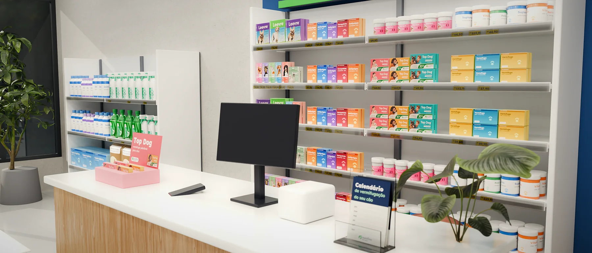
Prateleira ideal
A prateleira ideal mostra onde cada categoria da Ourofino deve ficar dentro da farmácia. Use como referência e adapte ao tamanho e ao jeito de cada loja.
- Entender a lógica da prateleira ideal da farmácia
- Colocar as categorias prioritárias na zona quente
- Posicionar a Ourofino ao lado da concorrente
- Adaptar a referência a lojas com pouco e com muito espaço
7.1O que é a prateleira ideal
O desenho que mostra onde cada produto fica na prateleira, frente por frente. Redes grandes usam planograma detalhado. Este guia usa uma versão mais simples, organizada por categoria: a prateleira ideal.
A prateleira ideal responde a uma pergunta: se você pudesse arrumar a farmácia do jeito certo, onde ficaria cada categoria da Ourofino? Ela trabalha com blocos de categoria e deixa de lado o detalhe de cada produto. Assim a mesma lógica serve para uma farmácia de duas prateleiras e para uma de vinte.
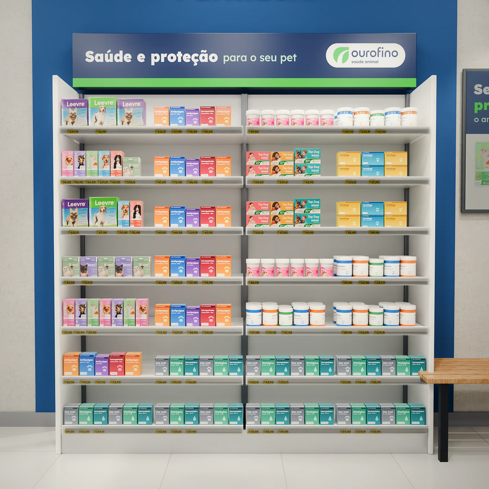
7.2As categorias da farmácia
Dentro da farmácia de uma loja pet, os produtos da Ourofino formam estes blocos:
| Bloco | O que entra | Produtos Ourofino de exemplo |
|---|---|---|
| Antipulga e carrapato | comprimidos, spot on e coleiras | WellPET, Banni 3, Leevre |
| Vermífugos | comprimidos palatáveis | Top Dog |
| Suplementos | tabletes mastigáveis e snacks funcionais | Plenipil |
| Medicamentos | produtos com orientação do veterinário | linha de medicamentos Ourofino |
Fora da farmácia, o Herbalvet T.A. e o EnziClim ficam na higiene do ambiente, perto do tapete higiênico e da areia para gato.
7.3As regras da prateleira ideal
Prioridade na zona quente
A zona quente é a faixa na altura dos olhos. Antipulga e vermífugo são as categorias que o tutor mais procura na farmácia, então ficam ali. Os produtos de campanha também ganham essa faixa durante a campanha.
Prateleiras de cima antes das de baixo
Na farmácia atrás do balcão, o tutor enxerga a prateleira por cima do balcão. Tudo o que fica abaixo da linha do balcão some da vista dele. Por isso a Ourofino ocupa as prateleiras de cima antes de descer.
Ao lado da concorrente
Cada bloco da Ourofino fica ao lado do bloco concorrente da mesma função. Antipulga ao lado de antipulga, vermífugo ao lado de vermífugo. O tutor que procura a marca que conhece encontra a Ourofino no mesmo olhar e pode comparar.
Cão de um lado, gato do outro
Separe os produtos por espécie dentro de cada bloco. O Banni 3 é para gato e o WellPET é para cão. Com cada espécie no seu lado, o balconista acha mais rápido e o tutor não leva o produto errado para casa.
- Antipulga e vermífugo na altura dos olhos
- Bloco da Ourofino encostado no bloco concorrente da mesma função
- Produtos de cão separados dos produtos de gato
- Ourofino abaixo da linha do balcão, onde o tutor não vê
- Produtos da Ourofino espalhados, um em cada canto
- Mexer na exposição da concorrente
7.4Como adaptar à loja real
Nenhuma farmácia é igual à outra. Use a lógica e ajuste ao espaço que existe.
uma ou duas prateleiras. Antipulga e vermífugo na altura dos olhos. Suplemento entra se sobrar espaço.
os quatro blocos, com antipulga e vermífugo no centro da zona quente.
todos os blocos, com a linha completa e espaço para a campanha do momento.
a farmácia costuma ser menor e o veterinário orienta a compra. Foque em produto disponível, limpo e com preço.
- Olhe a farmácia inteiraantes de mexer, veja quanto espaço a Ourofino ocupa hoje e onde.
- Encontre a zona quentevá para o lado do tutor, do outro lado do balcão, e veja qual prateleira fica na altura dos olhos.
- Monte os blocosuma categoria por bloco, encostada na concorrente da mesma função.
- Trabalhe no espaço da lojaorganize dentro do espaço que a loja já destina à Ourofino. Se enxergar uma oportunidade de mais espaço, informe o seu supervisor.
- Fotografeantes e depois, do mesmo ponto.
Saiba maisPor que este guia usa categoria e não produto
O portfólio da Ourofino é grande e cada loja tem uma farmácia diferente. Um planograma produto por produto ficaria enorme, mudaria a cada lançamento e ninguém conseguiria aplicar numa loja de duas prateleiras.
A prateleira ideal por categoria cabe em qualquer farmácia. Você leva quatro regras na cabeça e decide na hora, olhando o espaço real.
Com o tempo, esta parte do guia pode crescer para o gerenciamento de categoria, que olha o que cada loja vende mais e ajusta a exposição a partir disso. Por enquanto, as regras deste capítulo dão conta da maioria das farmácias.
A farmácia tem uma prateleira na altura do rosto do balconista e duas abaixo da linha do balcão. Onde fica o bloco de antipulga da Ourofino?
A farmácia de uma clínica com petshop tem uma prateleira só. O que você prioriza?
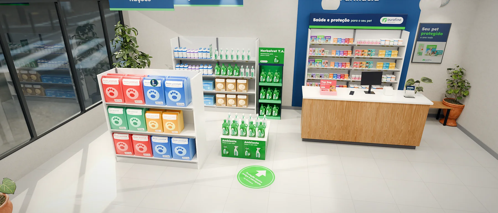
Materiais de PDV
Cada material tem um lugar certo na loja. Saber o que ele é, para que serve e onde vai evita o wobbler colado na porta do consultório.
- Reconhecer cada material de PDV pelo nome
- Saber onde colocar e onde não colocar cada um
- Instalar sem cobrir preço nem atrapalhar a loja
- Saber a hora de tirar o material
8.1O que é material de PDV
Material de ponto de venda. Tudo o que a marca leva para a loja para o produto aparecer: wobbler, cartaz, display, adesivo de chão e outros. Também se fala só “material de PDV”.
O material tem uma função: levar o tutor até o produto. Por isso a primeira pergunta para qualquer material é sempre a mesma: o produto está aqui perto?
8.2Quatro perguntas antes de instalar
- O produto está perto?material sem o produto ao lado frustra o tutor, que procura e não acha.
- A loja autorizou?peça ao responsável antes de colar, pendurar ou montar qualquer peça.
- Cobre alguma coisa?o material nunca cobre preço, produto, aviso da loja ou passagem.
- A campanha está valendo?material de campanha que já terminou sai na hora.
8.3Os materiais, um por um
Wobbler
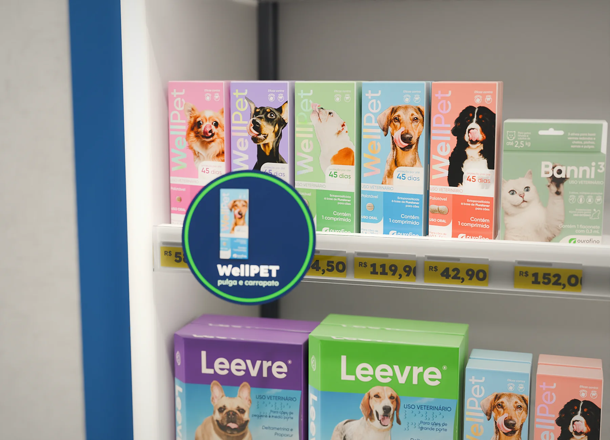
- O que é: uma plaquinha presa numa haste flexível que balança na borda da prateleira.
- Para que serve: puxar o olhar do tutor para um produto dentro da gôndola.
- Onde colocar: na borda da prateleira, embaixo do produto anunciado.
- Onde não colocar: porta do consultório, parede, vidro do caixa ou qualquer lugar longe do produto.
- Como instalar: prenda na borda sem cobrir a etiqueta de preço.
- Quando tirar: quando a campanha acabar, o produto acabar ou a peça estiver torta ou suja.
Stopper
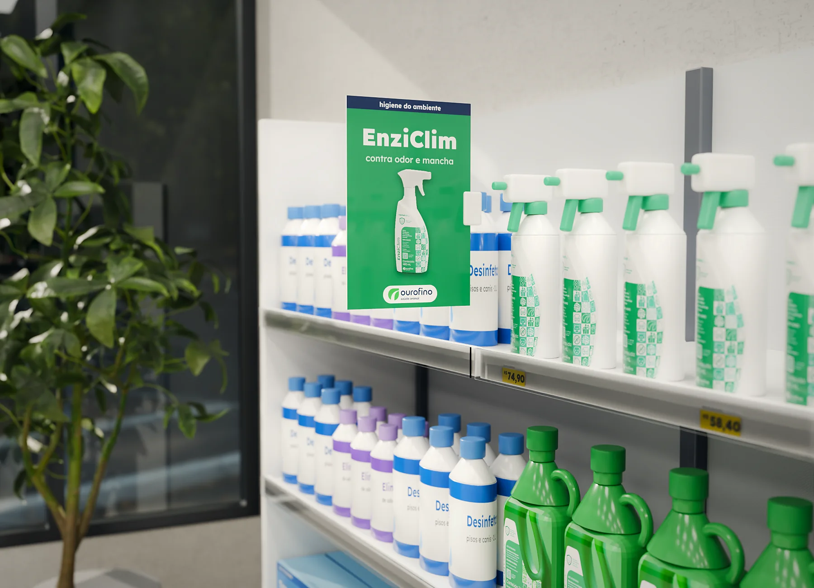
- O que é: uma placa que sai da gôndola em ângulo reto e fica virada para o corredor.
- Para que serve: chamar a atenção de quem anda pelo corredor e ainda não olhou para a prateleira.
- Onde colocar: na lateral da prateleira onde está o produto, na altura dos olhos.
- Onde não colocar: corredor estreito, onde a placa bate nas pessoas, ou numa gôndola sem o produto.
- Como instalar: encaixe no suporte da prateleira e confira se não atrapalha a passagem de carrinho.
- Quando tirar: no fim da campanha ou se estiver dobrado ou solto.
Testeira
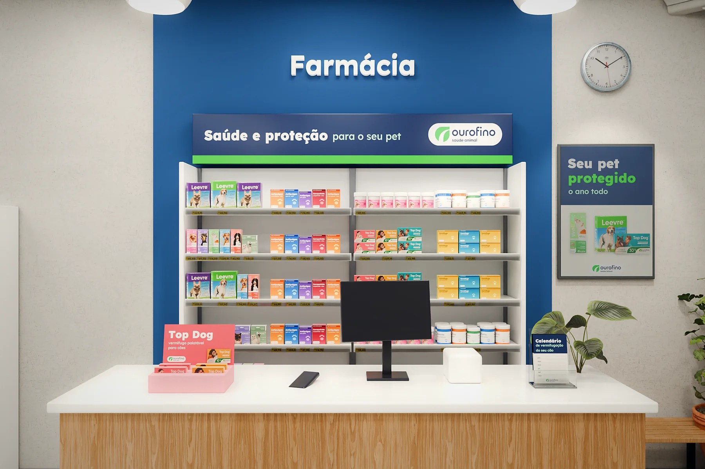
- O que é: uma placa no topo da gôndola.
- Para que serve: mostrar de longe onde fica a categoria ou a marca.
- Onde colocar: no alto da seção onde está o bloco da Ourofino.
- Onde não colocar: em cima de uma gôndola de outra categoria.
- Como instalar: prenda no suporte superior, reta, visível do começo do corredor.
- Quando tirar: quando a seção mudar de lugar ou a peça estiver desbotada.
Régua de gôndola
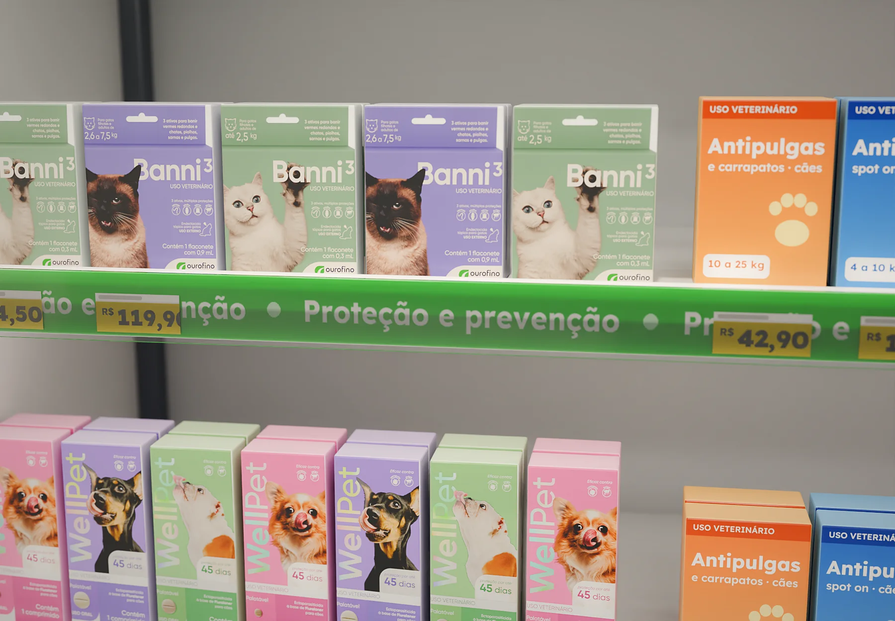
- O que é: uma tira impressa que encaixa na frente da prateleira, no trilho onde ficam os preços.
- Para que serve: marcar o espaço da marca e reforçar o bloco.
- Onde colocar: na prateleira onde está o bloco da Ourofino.
- Onde não colocar: por cima das etiquetas de preço da loja ou na prateleira de outra marca.
- Como instalar: encaixe deixando todas as etiquetas de preço visíveis.
- Quando tirar: quando rasgar, quando o produto mudar de prateleira ou quando o bloco acabar.
Display de balcão
- O que é: uma estrutura pequena que fica em cima do balcão, com produto ou com informação.
- Para que serve: lembrar o tutor na hora de pagar e facilitar a compra por impulso.
- Onde colocar: no balcão do caixa ou da farmácia, num canto livre.
- Onde não colocar: em cima da máquina de cartão ou no espaço onde o tutor apoia as compras.
- Como instalar: peça autorização, posicione e abasteça com preço visível.
- Quando tirar: quando ficar vazio e a loja não tiver estoque para repor.
Take one
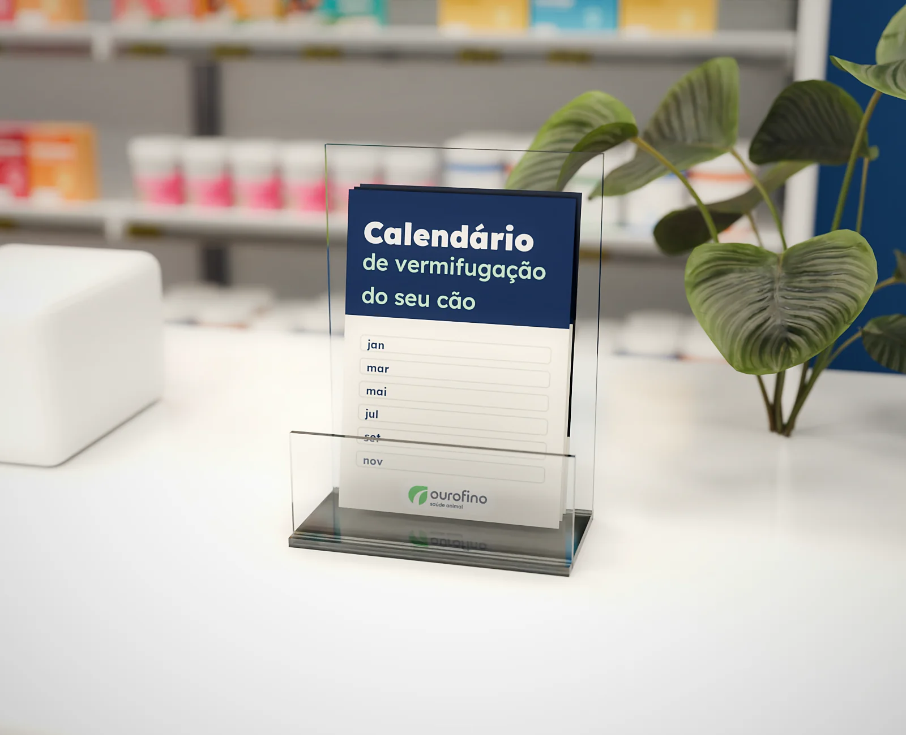
- O que é: um display com folhetos. O nome vem do inglês e quer dizer “pegue um”.
- Para que serve: informar o tutor, por exemplo sobre proteção contra pulga e carrapato.
- Onde colocar: no balcão, na sala de espera da clínica ou perto do banho e tosa.
- Onde não colocar: no chão ou em lugar molhado.
- Como instalar: deixe sempre com folhetos e reabasteça a cada visita.
- Quando tirar: quando o folheto estiver desatualizado ou o display estiver vazio sem reposição.
Display de chão
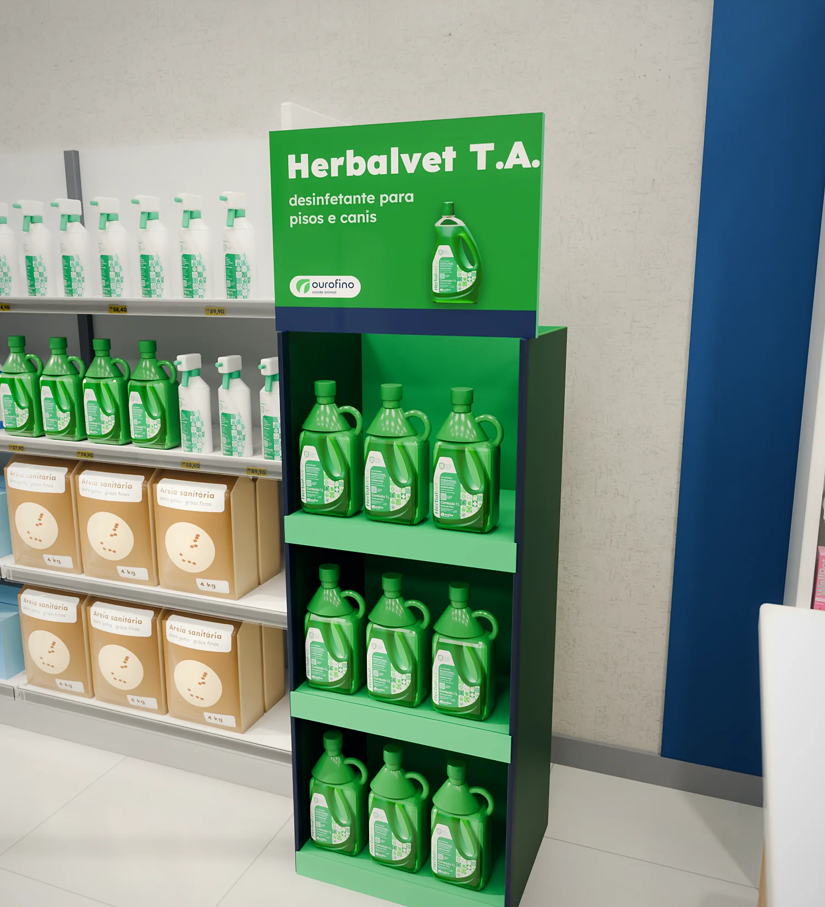
- O que é: uma estrutura de pé, apoiada no chão, com várias unidades do produto.
- Para que serve: criar um ponto extra, um segundo lugar onde o tutor encontra o produto.
- Onde colocar: num corredor de passagem, perto da categoria ou do caixa, com autorização da loja.
- Onde não colocar: bloqueando corredor, saída de emergência ou extintor.
- Como instalar: monte, abasteça só com o estoque que sobrar depois de encher a gôndola e coloque o preço.
- Quando tirar: quando ficar vazio, quebrar ou a campanha terminar.
Ilha
- O que é: um conjunto de produtos no meio do corredor, com acesso por todos os lados. Costuma ser montada com cubos, caixas impressas que se empilham.
- Para que serve: dar volume e destaque numa campanha.
- Onde colocar: numa área de muita passagem, com produtos que tenham relação entre si.
- Onde não colocar: com produtos sem relação misturados ou com cubo de um produto que não está ali (veja o erro do carnaval no capítulo 9).
- Como instalar: monte com o produto de verdade, com preço, e confira a estabilidade da pilha.
- Quando tirar: quando a campanha acabar ou o produto acabar.
Clip strip
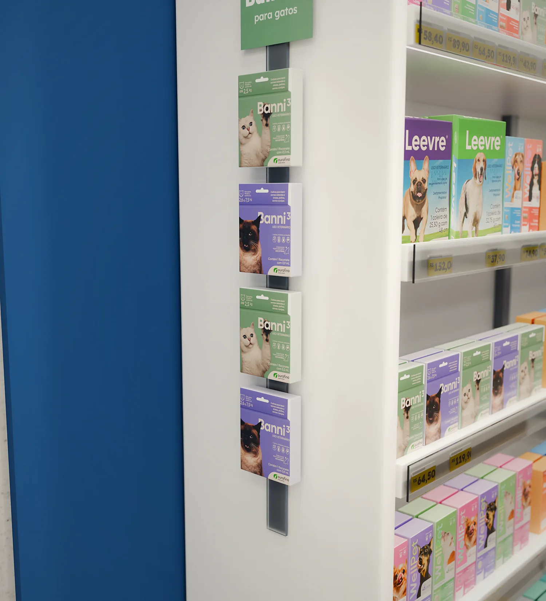
- O que é: uma tira com ganchos onde ficam pendurados produtos pequenos e leves.
- Para que serve: levar um produto pequeno para perto de outra categoria, sem tirar o produto do lugar dele.
- Onde colocar: na lateral de uma gôndola de categoria relacionada, na altura das mãos.
- Onde não colocar: com produto pesado ou com produto que precisa ficar atrás do balcão.
- Como instalar: pendure no gancho ou no trilho da prateleira, abastecido e com preço.
- Quando tirar: quando ficar vazio.
Cartaz
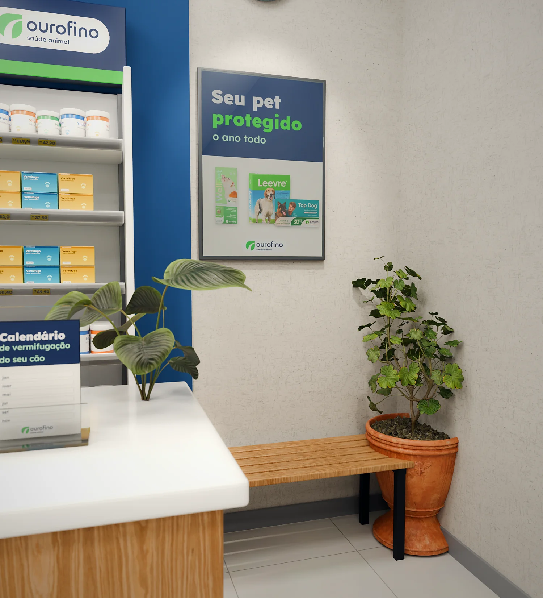
- O que é: uma peça impressa de comunicação para parede, vitrine ou área de espera.
- Para que serve: passar uma mensagem maior, como uma campanha ou um cuidado com o pet.
- Onde colocar: na vitrine, na parede da área de espera ou perto da categoria.
- Onde não colocar: em cima de um aviso da loja, no vidro da porta de saída ou num lugar úmido.
- Como instalar: pergunte à loja onde pode fixar e use fita que não estrague a parede.
- Quando tirar: quando a campanha terminar ou o cartaz desbotar ou rasgar.
Adesivo de chão
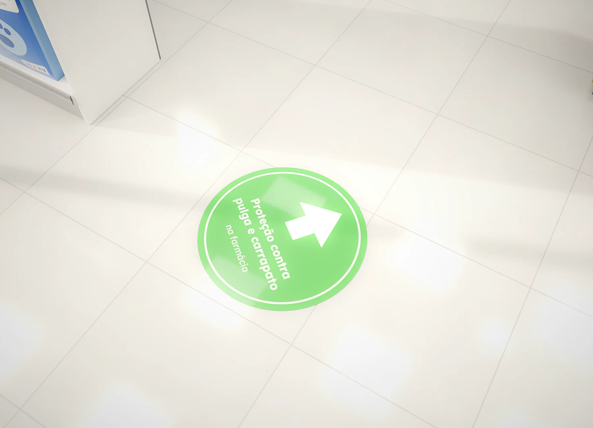
- O que é: um adesivo colado no piso.
- Para que serve: mostrar o caminho até o produto, por exemplo indicando que o antipulga está na farmácia.
- Onde colocar: num corredor de passagem, perto da entrada ou em frente à categoria.
- Onde não colocar: em área molhada, como o banho e tosa, ou no piso da clínica.
- Como instalar: limpe e seque o piso antes e cole sem deixar bolha.
- Quando tirar: quando começar a descolar, sujar ou gastar. Adesivo solto faz alguém escorregar.
Saiba maisMaterial demais também atrapalha
Uma loja cheia de material de várias marcas vira uma parede de papel. O tutor para de enxergar o que está escrito. Antes de instalar mais uma peça, veja o que já existe ali.
Na visita, tire também o que não serve mais: material de campanha antiga, peça rasgada, wobbler sem o produto embaixo. Material velho mostra ao lojista que ninguém cuida daquele espaço.
Você recebeu um wobbler de Top Dog. Onde ele vai?
A loja pediu para você montar um display de chão. O único espaço livre fica na frente do extintor. O que você faz?
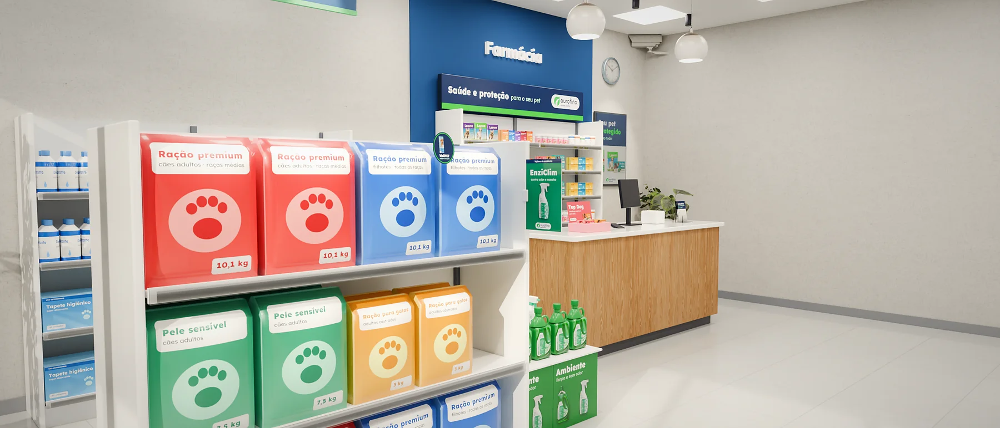
Cross merchandising e cross selling
Cross é ligar uma área da loja a outra. Às vezes você leva um material para outra categoria, às vezes junta dois produtos que combinam. São duas ações diferentes, e quem mistura as duas cria confusão na loja.
- Separar cross merchandising de cross selling
- Pensar como o tutor para descobrir onde cabe um cross
- Aplicar os exemplos com os produtos heróis
- Evitar o erro do carnaval
9.1Duas palavras, duas ações
“Cross” vem do inglês e quer dizer cruzar. Você cruza uma área da loja com outra, ou um produto com outro.
Levar o material de um produto para outra área da loja, onde o tutor pode lembrar que precisa dele. O produto continua no ponto natural e o material vai até o tutor. Exemplo: wobbler de antipulga para cão na gôndola de ração de cão.
Juntar dois produtos que se completam no uso, para o tutor levar os dois. Exemplo: o desinfetante de ambiente ao lado do eliminador de odor.
você mexe no material. O produto fica onde está e o material lembra o tutor em outro ponto da loja.
você trabalha com dois produtos. Eles ficam perto um do outro, ou o balconista oferece um junto com o outro.
9.2Pense como o tutor
Você não precisa decorar uma lista de cross. Em cada área da loja, faça duas perguntas:
- O que o tutor está fazendo nesta área?comprando ração, escolhendo uma coleira, levando o cão para o banho.
- Do que mais ele vai precisar por causa disso?quem compra coleira vai passear, e quem passeia precisa de proteção contra pulga e carrapato.
Se a resposta da segunda pergunta tem um produto Ourofino, ali cabe um cross.
Veja um exemplo. Um tutor está na área de coleiras e guias escolhendo uma guia nova. Ele vai sair com o cão: rua, praça, grama, contato com outros cães. Um wobbler de WellPET nessa área lembra que o cão precisa estar protegido. Ele não pega o WellPET ali, porque o produto fica no balcão da farmácia. O material faz a ponte e o tutor pede o produto no balcão.
Arraste para o lado para ver a planta inteira.
- 1Ração de cão material de WellPET e de Plenipil (para pele sensível)
- 2Coleiras e guias material de WellPET
- 3Ração de gato material de Banni 3
- 4Top Dog + Herbalvet T.A. vermífugo para o cão e desinfetante para o ambiente onde ele vive
- 5EnziClim + Herbalvet T.A. os dois cuidam do ambiente, lado a lado na gôndola
9.3Cross merchandising com os heróis
| Material de | Vai para a área de | Por quê |
|---|---|---|
| WellPET (antipulga e carrapato para cão) | Ração de cão | quem compra ração de cão tem um cão em casa que precisa de proteção |
| WellPET | Coleiras e guias | o cão vai passear e precisa estar protegido |
| Banni 3 (proteção para gato) | Ração de gato | quem compra ração de gato tem um gato em casa |
| Plenipil (suplemento para pele e pelo do cão) | Ração para pele sensível | quem cuida da pele do cão pela ração pode se interessar pelo suplemento |
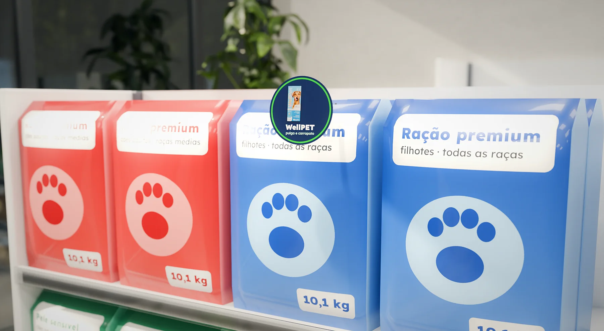
Preste atenção à espécie. O WellPET é para cão, então o material dele vai para a área de cão. O Banni 3 é para gato e vai para a área de gato. Material de antipulga para cão na ração de gato confunde o tutor e passa a impressão de descuido com a marca.
9.4Cross selling com os heróis
| Produto | Combina com | Por quê |
|---|---|---|
| EnziClim | Herbalvet T.A. | os dois cuidam do ambiente: o EnziClim age contra odor e mancha, o Herbalvet T.A. desinfeta |
| Top Dog | Herbalvet T.A. | o Top Dog cuida dos vermes do cão e o Herbalvet T.A. limpa o ambiente onde ele vive |
O EnziClim e o Herbalvet T.A. ficam na mesma categoria, a higiene do ambiente. Ali o cross selling acontece na própria gôndola: um ao lado do outro.
O Top Dog fica na farmácia e o Herbalvet T.A. fica na higiene do ambiente. Quando os dois produtos estão em áreas diferentes, o cross selling acontece na conversa do balconista ou com um material que aponte para o outro produto.
9.5O erro do carnaval
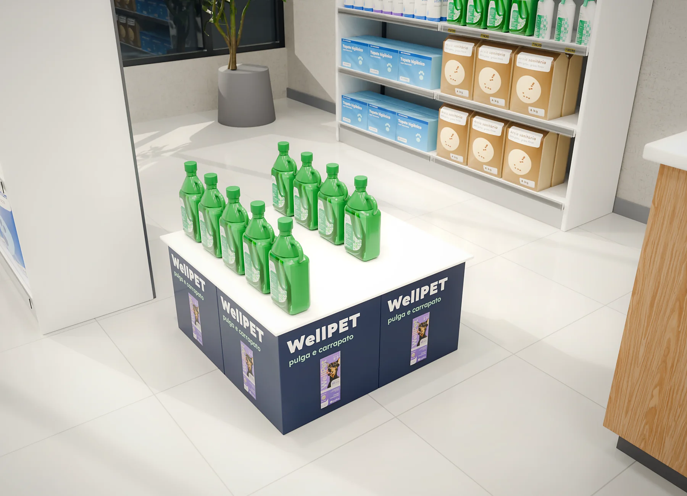
- Material de cão na área de cão e material de gato na área de gato
- Material perto do produto ou apontando para onde ele está
- Produtos juntos só quando combinam no uso
- Material de antipulga para cão na ração de gato
- Cubo de um produto ao lado de outro sem relação
- Tirar produto do balcão para montar ilha
9.6Onde você colocaria?
Você tem um wobbler de Banni 3. Fora da farmácia, em que área ele faz mais sentido?
Um tutor está escolhendo uma guia nova para passear com o cão. Qual material faz sentido nessa área?
O Herbalvet T.A. e o EnziClim estão lado a lado na gôndola de higiene do ambiente. Isso é:
Saiba maisQuando usar cada um
O cross merchandising resolve o caso dos produtos que ficam atrás do balcão, como o WellPET. O produto não sai da farmácia, mas o material dele aparece no caminho do tutor e faz ele pedir o produto no balcão.
O cross selling aumenta o que o tutor leva na mesma compra. Funciona melhor quando os dois produtos ficam na mesma área. Quando eles estão em áreas diferentes, quem faz a ligação é o balconista, na hora do atendimento.
Desfaça o cross quando ele perder o sentido: o produto acabou, a campanha terminou ou a loja mudou as categorias de lugar. Um material de cross esquecido vira o carnaval que este capítulo mostrou.
A Ourofino vai confirmar a lista dos cross mais importantes. Comece por eles e use as duas perguntas do tutor para encontrar os outros.
“Como falar de produto: CBV”
O balconista indica o produto que ele sabe explicar. Com o CBV, você entrega essa explicação pronta, em três partes curtas.
- Separar característica, benefício e vantagem de qualquer produto
- Ajustar a conversa para o balconista e para o gerente da loja
- Reconhecer o limite do que o promotor pode dizer
10.1Por que aprender a falar de produto
O tutor confia no balconista. Quando ele chega ao balcão com uma dúvida, quem responde é a pessoa da loja, e ela indica o produto que consegue explicar com segurança.
O seu papel nessa conversa é dar ao balconista as palavras certas. Ele não precisa decorar a ficha técnica. Ele precisa de uma frase clara sobre o que o produto faz pelo pet e pelo tutor.
Para montar essa frase, a Ourofino usa um método de três partes chamado CBV.
Sigla de Característica, Benefício e Vantagem. É um jeito de organizar o que falar de um produto: primeiro o que ele é, depois o que ele faz pela pessoa e pelo pet, e por último por que escolher este.
O que o produto é ou tem.
Ex.: Comprimido palatável.O que isso faz pelo pet e pelo tutor.
Ex.: O cão aceita sem briga, e o tutor dá em casa sem estresse.Por que escolher este.
Ex.: Até 45 dias de proteção com um comprimido.Exemplo com WellPET, apenas ilustrativo. O argumento oficial de cada produto está no capítulo 11.
10.2As três partes, uma de cada vez
Antes de usar um produto da Ourofino, treine com algo do dia a dia. Pense numa coleira comum de nylon, dessas que toda loja pet vende.
Característica: o que o produto é ou tem
A característica é um fato. Dá para ver, pegar ou ler na embalagem, e ninguém discute.
Na coleira: fivela de engate rápido e regulagem com cinco furos.
Benefício: o que isso muda para o pet e para o tutor
O benefício responde à pergunta que o tutor faz por dentro: “e daí?”. Ele traduz a característica em algo que a pessoa sente no dia a dia.
Na coleira: o tutor coloca e tira em dois segundos, e a mesma coleira acompanha o filhote enquanto ele cresce.
Vantagem: por que escolher este
A vantagem compara. Ela mostra o que este produto entrega e que a outra opção da prateleira entrega pior ou não entrega.
Na coleira: o tutor compra uma coleira só, em vez de trocar a cada fase do crescimento.
Fivela de engate rápido e regulagem com cinco furos
O tutor coloca e tira em dois segundos, e a coleira acompanha o filhote enquanto ele cresce
Uma coleira só serve do filhote ao adulto, sem precisar trocar
10.3Do exemplo para o produto
Com um produto da Ourofino o raciocínio é o mesmo. Veja o WellPET, comprimido contra pulga e carrapato para cães:
Comprimido palatável para cães, que trata pulga e carrapato
O tutor dá o comprimido como se fosse um petisco, sem briga, e o cão fica livre de pulga e carrapato
Um comprimido mantém a proteção por até 45 dias
Que tem gosto bom para o animal. O cão aceita o comprimido como se fosse um petisco.
Repare na divisão: a característica fala do comprimido, o benefício fala do tutor e do cão, e a vantagem dá o motivo para escolher. As fichas de todos os produtos heróis estão no capítulo 11.
10.4Um produto, duas conversas
Na loja você fala com pessoas que têm preocupações diferentes. O balconista quer ajudar o tutor e não errar na indicação. O gerente ou o dono quer a categoria organizada e o cliente voltando. O produto é o mesmo, e você muda a parte do CBV que vai na frente.
| Para o balconista | Para o gerente ou o dono |
|---|---|
| Destaque o benefício para o pet e para o tutor | Destaque a categoria organizada e o giro |
| Entregue uma frase curta, fácil de repetir no balcão | Mostre como a exposição ajuda o cliente a achar o produto sozinho |
| Mostre onde o produto fica e como reconhecer a embalagem | Lembre que tutor bem atendido volta para comprar de novo |
Velocidade com que o produto sai da prateleira e vai para a sacola do cliente. Produto com giro alto precisa de reposição frequente.
Com o balconista
“Quando o tutor reclamar de pulga no cachorro, você pode falar do WellPET. É um comprimido que o cão come como petisco e protege por até 45 dias.”
“E se ele perguntar se pode dar junto com outro remédio?”
“Essa pergunta é para o veterinário. Vale orientar o tutor a confirmar com ele.”
Com o gerente ou o dono
“Organizei os antipulgas por espécie, cão de um lado e gato do outro. Assim o tutor acha o que procura e o balconista indica sem errar.”
“Ficou mais fácil de ver.”
“Se o senhor autorizar, coloco uma régua de gôndola para sinalizar a área. O cliente acha sozinho.”
Nas duas conversas você mostra o trabalho feito e como ele ajuda a loja a atender melhor. Você não pede nada em troca, e nada sobre preço ou pedido entra nessa conversa.
10.5O que você pode e o que não pode dizer
Antiparasitário, vermífugo e suplemento são produtos de saúde. Cada animal tem peso, idade e histórico diferentes. Por isso a orientação de uso para um animal específico cabe ao médico-veterinário.
- Contar o que o produto é, com as palavras da embalagem e do material oficial
- Explicar o benefício para o pet e o tutor, como está no CBV aprovado
- Mostrar onde o produto fica na loja e como reconhecer a embalagem
- Encaminhar dúvidas de uso para o médico-veterinário ou para o material oficial
- Dizer quanto dar ou por quanto tempo o tutor deve usar o produto
- Dizer que o produto serve para o caso de um animal específico
- Prometer resultado, como “acaba com a pulga em um dia”
- Falar mal da marca concorrente para valorizar a Ourofino
Quando a pergunta passa do limite, use uma frase simples e respeitosa:
“Para saber a quantidade certa e por quanto tempo usar, o ideal é o tutor conversar com o veterinário dele. A embalagem também traz a orientação.”
Saiba maisPor que o benefício convence mais do que a característica
A característica fala a língua de quem fabrica. Poucos tutores sabem o que é um princípio ativo ou o que quer dizer “palatável”. Eles entendem “o cachorro come sem brigar” e “protege por um mês e meio”.
Quando o balconista repete a característica, o tutor ouve um termo técnico e fica em dúvida. Quando ele repete o benefício, o tutor se imagina usando o produto em casa.
A vantagem entra quando o tutor está com duas opções na mão. Ela responde “por que este e não aquele?” sem você precisar citar a marca concorrente.
Um bom treino: pegue três produtos da prateleira, de qualquer marca, e diga em voz alta o CBV de cada um. Depois de alguns dias a conversa no balcão sai sem esforço.
O balconista diz: “o WellPET é um comprimido palatável”. Isso é característica, benefício ou vantagem?
Um tutor pergunta quantos comprimidos de vermífugo deve dar para o cachorro de 25 kg. O que você faz?


Produtos heróis
O portfólio da Ourofino Pet tem mais de 100 itens. Aqui estão os heróis de cada linha, com o que você precisa saber para expor e explicar cada um.
- Reconhecer os produtos heróis pela embalagem
- Saber em que área da loja cada um fica
- Usar o CBV de cada herói na conversa com a loja
- Escolher o cross e o material certo para cada produto
11.1Por que só os heróis
A Ourofino Pet vende mais de 100 itens, de antiparasitários a produtos de desinfecção. Você não precisa guardar tudo isso de cabeça.
Este capítulo mostra os heróis, os produtos que a Ourofino definiu como prioridade de cada linha. Você confere os heróis primeiro em toda visita. Com o herói na gôndola, de frente e com preço, a linha inteira começa bem.
Produto que a empresa escolhe como prioridade de uma linha. É o primeiro que você procura na loja, confere a exposição e apresenta ao balconista.
11.2Como ler cada ficha
Cada ficha mostra a embalagem, onde fica o ponto natural (o lugar fixo do produto na loja), o CBV, o cross possível e o material indicado. Leia antes da visita e confira dentro da loja.
11.3WellPET
Comprimido palatável que trata infestações de pulga e carrapato, com até 45 dias de proteção.
Cães.
Na farmácia, atrás do balcão ou na área controlada, junto dos antiparasitários para cão.
Área de ração de cão e de acessórios de passeio, como coleiras e guias. Cão que passeia precisa estar protegido.
Wobbler na prateleira da farmácia. Nas outras áreas, use só o material e deixe o produto na farmácia.
Comprimido palatável para cães, que trata pulga e carrapato
O cão come como petisco e fica livre de pulga e carrapato, sem briga na hora de dar
Um comprimido mantém a proteção por até 45 dias
11.4Banni 3
Produto spot on, aplicado na pele da nuca, com múltiplas proteções contra vermes redondos e chatos, piolhos, sarnas e pulgas.
Gatos.
Na farmácia, junto dos antiparasitários para gato, separado da área de cão.
Área de ração de gato e de areia sanitária.
Wobbler na prateleira de gato da farmácia e material na área de ração de gato. Material de Banni 3 fica longe da área de cão.
Forma de aplicação em que o líquido de um flaconete (frasco pequeno) vai direto na pele da nuca do animal.
Aplicação spot on na nuca, em flaconete por faixa de peso
O tutor aplica em poucos segundos, sem precisar fazer o gato engolir comprimido
Um produto só reúne proteção contra vermes, pulgas, piolhos e sarnas
11.5Top Dog
Vermífugo em comprimido palatável, com sabor que os cães gostam. Atua em vermes redondos e chatos e também é indicado para giardíase.
Cães.
Na farmácia, junto dos vermífugos para cão.
Cross selling com o Herbalvet T.A.: o vermífugo cuida do cão e o desinfetante cuida do ambiente onde ele vive.
Wobbler na prateleira de vermífugos e display de balcão, quando houver.
Doença intestinal causada por um protozoário, a giárdia. Por isso o cuidado com o cão e com o ambiente onde ele vive anda junto.
Vermífugo em comprimido palatável para cães, indicado também para giardíase
O cão aceita o comprimido como petisco e o tutor vermifuga sem estresse
Atua em vermes redondos, vermes chatos e na giardíase, no mesmo produto
11.6Leevre
Coleira que auxilia no controle de pulgas e carrapatos e na repelência ao mosquito transmissor da leishmaniose visceral canina.
Cães, em duas apresentações por porte.
Na farmácia, com os antiparasitários para cão.
Área de acessórios, perto de coleiras comuns e guias. Quem compra coleira está pensando no passeio.
Wobbler na farmácia e material de sinalização na área de acessórios.
Doença grave que o cão pega pela picada de um mosquito. Em várias regiões do Brasil ela preocupa o tutor.
Coleira ectoparasiticida para cães, em duas apresentações por porte
O tutor coloca a coleira e o cão sai para passear protegido contra pulgas e carrapatos
Também ajuda a repelir o mosquito transmissor da leishmaniose visceral canina
11.7Herbalvet T.A.
Desinfetante bactericida, fungicida, protozoaricida e viricida, com ação desodorizante. É biodegradável e não corrosivo.
Ambiente: pisos, paredes, canis, gatis e clínicas.
Na área de higiene do ambiente, perto de eliminadores de odor e tapetes higiênicos. Pode ficar fora da farmácia.
Lado a lado com o EnziClim, da mesma categoria. Cross selling com o Top Dog. Material na área de tapetes higiênicos e de areia.
Régua de gôndola ou wobbler na área de higiene do ambiente. Display de chão quando a loja tiver espaço.
Desinfetante de ação ampla, biodegradável e não corrosivo
Limpa e tira o cheiro de canil, gatil, piso e parede sem estragar a superfície
Age contra bactérias, fungos, protozoários e vírus no mesmo produto
11.8EnziClim
Solução com microrganismos vivos que atua de forma natural contra odores e manchas de urina, fezes e vômito em superfícies.
Ambiente: a casa do tutor, o canil e qualquer superfície onde o pet suja.
Na área de higiene do ambiente, lado a lado com o Herbalvet T.A.
Área de tapetes higiênicos e de areia sanitária. Quem compra tapete higiênico convive com xixi fora do lugar.
Régua de gôndola ou wobbler na área de higiene do ambiente.
Solução com microrganismos vivos
Tira o cheiro e a mancha de xixi, cocô e vômito do pet
Os microrganismos agem sobre o próprio resíduo de urina, fezes e vômito
11.9Plenipil
Suplemento em tablete mastigável e palatável, com ômega 3 (EPA e DHA), vitamina A, biotina e selênio.
Cães de todas as idades.
Na farmácia, junto dos suplementos.
Cross selling com a ração para pele sensível. O tutor que escolhe esse alimento já está cuidando da pele e do pelo do cão.
Wobbler na prateleira de suplementos e material na área de ração para pele sensível.
Tablete mastigável com ômega 3 (EPA e DHA), vitamina A, biotina e selênio
O cão come como petisco e recebe nutrientes ligados ao cuidado da pele e do pelo
Vários nutrientes em um tablete só, para cães de todas as idades
11.10Erros que mais aparecem com os heróis
- Material de Banni 3 na área de ração de gato
- Material de WellPET na área de acessórios de passeio
- Herbalvet T.A. e EnziClim lado a lado
- Material de antipulga para cão na área de ração de gato
- Cubo de WellPET ao lado de produto de outra categoria, sem o WellPET por perto
- Antiparasitário solto num ponto extra fora da área controlada
Saiba maisPor que os antiparasitários ficam atrás do balcão
Antiparasitários, vermífugos e suplementos têm valor unitário mais alto e pedem orientação na hora da compra. Por isso a maioria das lojas deixa esses produtos na farmácia, atrás do balcão ou numa área que o balconista controla.
Nesses casos, o cross acontece pelo material. Você leva a lembrança do produto para a área de ração ou de acessórios, e o tutor pede no balcão. O produto continua seguro e o ponto natural continua cheio.
Os produtos de desinfecção, como o Herbalvet T.A. e o EnziClim, seguem outra regra. Eles podem ficar no autosserviço, na área de higiene do ambiente, onde o tutor pega sozinho.
Você encontra um wobbler de Banni 3 na área de ração de cães. O que faz?
Qual dupla de heróis faz sentido ficar lado a lado na área de higiene do ambiente?
Postura e conduta
Na loja, você é um convidado. O jeito como você se comporta hoje decide se a porta continua aberta na próxima visita.
- Saber o que fazer sempre e o que nunca fazer dentro da loja
- Usar o celular e tirar fotos sem expor ninguém
- Trabalhar com segurança e com a apresentação certa
- Agir num conflito e saber quando avisar o supervisor
12.1Você representa a Ourofino
Quando você entra na loja de uniforme, o lojista vê a Ourofino. Ele lembra de como você chegou, de como tratou a equipe e de como deixou a gôndola no fim da visita.
A loja não tem obrigação de receber você. Ela permite que você trabalhe ali. Uma postura cuidadosa mantém essa porta aberta e faz o balconista querer ajudar na próxima vez.
12.2Sempre e nunca
- Cumprimentar e se apresentar ao responsável antes de mexer em qualquer coisa
- Pedir licença para trabalhar na gôndola e para instalar material
- Respeitar o horário de pico e esperar o balconista terminar o atendimento
- Deixar a área limpa e as caixas vazias onde a loja indicar
- Agradecer e avisar quando terminar
- Mexer na gôndola ou no estoque sem autorização
- Discutir com funcionário ou com cliente
- Falar mal da marca concorrente ou de outra loja
- Usar o celular para assunto pessoal na frente da equipe
- Prometer algo que depende de outra pessoa, como prazo de entrega ou preço
12.3Celular e fotos
O celular é ferramenta de trabalho. Você usa para ver o roteiro, registrar a visita e tirar as fotos de antes e depois. Na frente da equipe da loja, ele aparece só para isso.
A foto mostra a gôndola, e só ela. Cliente e funcionário da loja não autorizaram aparecer na sua imagem, e a lei protege o rosto e os dados de cada pessoa.
Lei Geral de Proteção de Dados. Ela protege informações pessoais, como o rosto de alguém numa foto. Fotografar uma pessoa sem autorização pode trazer problema para você e para a empresa.
- Peça licençaavise o responsável que vai fotografar a gôndola para o registro da visita.
- Espere o corredor esvaziarse tiver cliente na frente, aguarde ou mude o ângulo.
- Fotografe de frentea gôndola inteira no quadro, na mesma distância para a foto de antes e a de depois.
- Confira antes de enviarse aparecer rosto, crachá ou a tela do caixa, apague e tire outra.
- Envie só pelo canal da empresafoto de loja não vai para rede social pessoal nem para grupo de fora do trabalho.
12.4Uniforme e apresentação
A primeira impressão acontece antes de você falar. Uniforme limpo e identificação à vista mostram de onde você é e por que está ali.
Limpo, completo e do jeito que a empresa orienta.
Crachá ou credencial à vista durante a visita inteira.
Quando a regra da sua operação pedir, como em dias de abordagem ao tutor.
Mãos limpas para manusear embalagens e cabelo preso perto dos produtos.
12.5Segurança
A gôndola tem prateleira alta, caixa pesada e corredor com cliente passando. Cuide de você e de quem está em volta.
- Pedir a escada ou a banqueta da loja para alcançar a prateleira de cima
- Dividir a caixa pesada em partes ou pedir ajuda para carregar
- Manter o corredor livre enquanto organiza, com as caixas encostadas
- Instalar o material com o fixador que vem nele ou com fita dupla face
- Subir na prateleira ou apoiar o pé na gôndola
- Deixar estilete aberto ou caixa no meio do corredor
- Tapar saída de emergência, extintor ou passagem de cliente com material
- Usar cola que danifique a gôndola da loja
12.6Quando acontece um conflito
Um funcionário pode não querer você ali, um cliente pode reclamar ou alguém pode pedir algo que você não pode fazer. Nesses momentos, a sua tarefa é manter a calma e proteger a relação com a loja.
- Não discutaouça, mantenha o tom de voz baixo e não rebata.
- Saia da situação com educaçãoagradeça e diga que vai verificar.
- Registre o que aconteceudata, hora, loja, quem estava e o que foi dito, logo depois do ocorrido.
- Avise o supervisorconte o fato do jeito que aconteceu, sem aumentar e sem diminuir.
“Hoje não dá pra mexer na gôndola, está tudo corrido aqui.”
“Sem problema, eu entendo. Posso voltar num horário que fique melhor para vocês?”
12.7Quando avisar o supervisor
Avise o seu supervisor sempre que a situação depender de alguém além de você:
- A loja não autoriza o seu trabalho ou pede para você não voltar.
- Houve discussão, reclamação de cliente ou acidente.
- Você encontrou produto vencido ou danificado em quantidade.
- A mesma ruptura (falta do produto na gôndola) aparece visita após visita.
- O material de PDV acabou, chegou danificado ou a loja pediu uma peça que você não tem.
- O lojista perguntou sobre preço, pedido ou condição comercial. Esse assunto é do vendedor do distribuidor.
Saiba maisPor que registrar antes de avisar
Quando você avisa o supervisor com o fato anotado, ele age rápido e consegue defender você se for preciso. Um registro simples resolve: o que aconteceu, quando, onde e com quem.
Sem registro, cada pessoa conta uma versão e ninguém sabe ao certo o que houve. Com o registro, a empresa tem a informação certa para conversar com a loja ou com o distribuidor.
O registro também mostra padrões. Se a mesma loja recusa o trabalho em toda visita, o supervisor entende o motivo e muda a abordagem.
Ao tirar a foto de depois, você percebe um cliente de costas no canto da imagem. O que faz?
O gerente levanta a voz e diz que não quer promotor mexendo na gôndola hoje. Qual a atitude certa?
Glossário
Todos os termos do guia em linguagem simples, cada um com um exemplo de loja.
- Consultar o significado de qualquer termo do guia
- Explicar cada termo para quem está começando
A
B
C
D
E
F
G
I
L
M
P
R
S
T
V
W
Z
Nenhum termo encontrado.
Checklist da visita
Marque cada item antes, durante e depois da visita. O que ficar em branco vira a primeira tarefa da próxima.
- Planejar a visita antes de sair
- Executar na ordem certa dentro da loja
- Fechar a visita com registro e próximo passo
Antes da visita
Durante a visita
Depois da visita
Teste final
Dez situações de loja para conferir o que você aprendeu. Responda pensando no que faria lá dentro.
- Testar o que aprendeu sobre visita, gôndola, materiais e produtos
- Descobrir quais capítulos vale revisar
Cada resposta traz uma explicação e o capítulo onde o assunto aparece. Errou? Volte ao capítulo indicado e leia de novo antes da próxima visita.
Amanhã você visita uma loja que já atendeu no mês passado. O que faz antes de sair de casa?
Você chega a um petshop pela primeira vez. Qual é a primeira coisa a fazer?
Ao repor a prateleira de Top Dog, onde ficam as caixas com a validade mais próxima?
Você montou um display de chão com Herbalvet T.A. e a gôndola de higiene ficou com um buraco. O que faz?
Onde fica o wobbler?
Um wobbler de WellPET colocado na área de ração de cão é um exemplo de quê?
Qual destas duplas é um exemplo de cross selling?
Na frase “o cão come o comprimido como petisco, sem briga”, qual parte do CBV aparece?
Uma tutora pergunta qual antipulgas é melhor para o gato dela, que tem alergia de pele. O que você responde?
O lojista pergunta se você consegue um preço melhor no próximo pedido. O que faz?